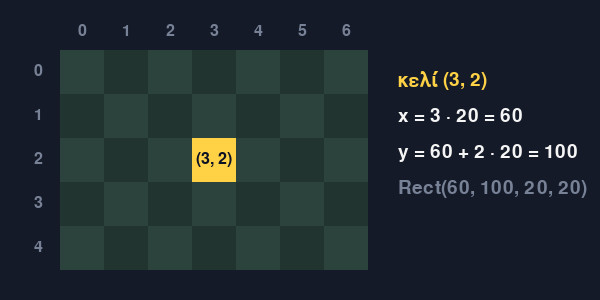
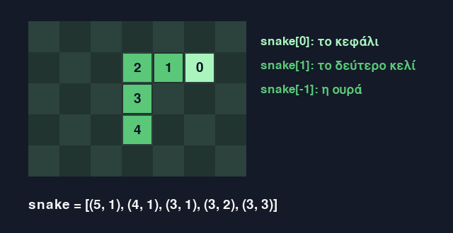
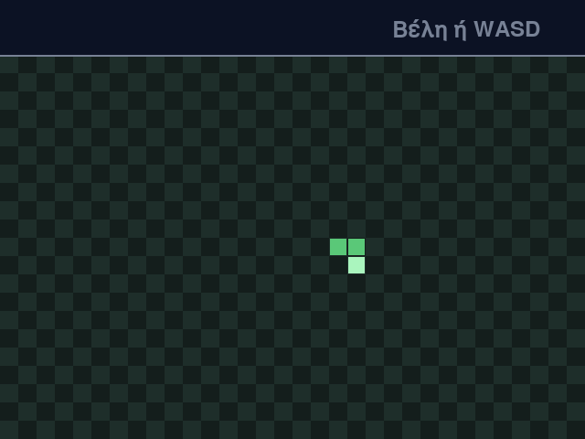
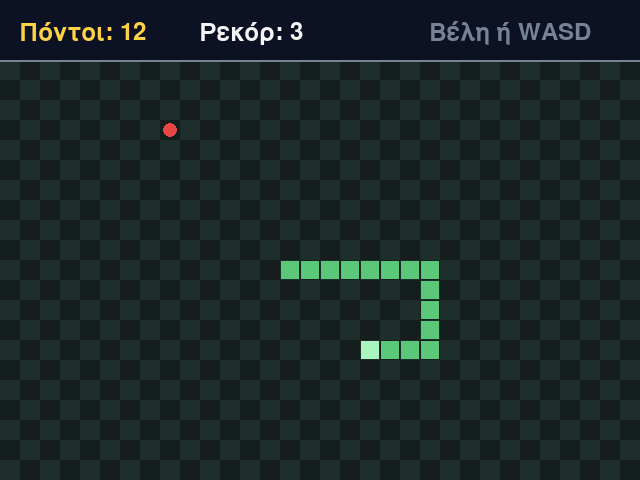
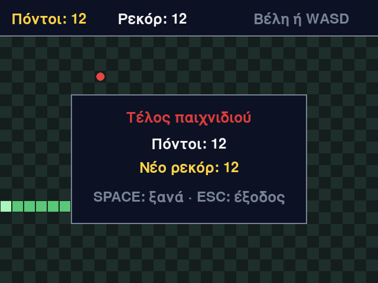

Μάθημα 13: Φίδι¶
Παιχνίδι: το κλασικό Φίδι: το φίδι κινείται βήμα βήμα σε ένα πλέγμα, τρώει τροφή και μεγαλώνει, και το παιχνίδι τελειώνει όταν χτυπήσει τον τοίχο ή το ίδιο του το σώμα· όσο περισσότερους πόντους κάνεις, τόσο πιο γρήγορα κινείται
Διάρκεια: 4 κύκλοι × (περίπου 45′ εργασία + 15′ διάλειμμα)
Φύλλο εργασίας
Αυτή η σελίδα εξηγεί τις έννοιες. Οι ασκήσεις και οι οδηγίες για κάθε κύκλο βρίσκονται στο Φύλλο εργασίας 13. Δούλεψε με τις δύο σελίδες ανοιχτές.
Αρχεία εργαστηρίου¶
| Αρχείο | Κύκλος |
|---|---|
| 01-grid.py | 1 |
| 02-food.py | 2 |
| 03-collisions.py | 3 |
| 04-final.py | 4 |
| exercises.py | 1–4 (οι ασκήσεις «γράψε εσύ») |
| check_exercises.py | 1–4 (αυτοέλεγχος των ασκήσεων) |
Κατέβασε και τα έξι αρχεία στον ίδιο φάκελο. Σήμερα δεν χρειάζονται εικόνες ούτε ήχοι: το παιχνίδι ζωγραφίζεται μόνο με τα εργαλεία του Μαθήματος 7.
Η αποστολή¶
Στο Μάθημα 12 ολοκλήρωσες ένα παιχνίδι με πολλά κομμάτια. Σήμερα φτιάχνεις ένα καινούργιο, το Φίδι, και αυτή τη φορά το μεγαλύτερο μέρος της λογικής το γράφεις εσύ, με τον αυτοέλεγχο να σου λέει αν δουλεύει. Οι κανόνες είναι απλοί:
- Το φίδι κινείται ένα κελί σε κάθε βήμα και δεν σταματά ποτέ. Εσύ αλλάζεις μόνο την κατεύθυνσή του, με τα βέλη ή με τα W, A, S, D.
- Μια τροφή περιμένει σε ένα τυχαίο ελεύθερο κελί. Όταν το κεφάλι του φιδιού πέσει πάνω της, το φίδι μεγαλώνει κατά ένα κελί, κερδίζεις έναν πόντο και εμφανίζεται νέα τροφή.
- Το παιχνίδι τελειώνει όταν το κεφάλι χτυπήσει στον τοίχο ή στο σώμα του φιδιού.
- Όσο περισσότερους πόντους κάνεις, τόσο πιο γρήγορα κινείται το φίδι. Το ρεκόρ μένει όσο το παιχνίδι είναι ανοιχτό.
Χρειάζονται πέντε ιδέες:
- Το πλέγμα: οι θέσεις μετριούνται σε κελιά και όχι σε pixel.
- Το φίδι ως λίστα: μια λίστα από κελιά (πλειάδες), με το κεφάλι πρώτο.
- Τα βήματα: ένας χρονιστής στέλνει ένα συμβάν σε κάθε βήμα, ανεξάρτητα από το πόσα καρέ ζωγραφίζονται το δευτερόλεπτο.
- Οι συγκρούσεις: ο τοίχος ελέγχεται με συγκρίσεις και το σώμα με τον τελεστή
in. - Η τροφή: επιλέγεται τυχαία από τη λίστα με τα ελεύθερα κελιά.
Σε κάθε κύκλο γράφεις και δικό σου κώδικα με αυτοέλεγχο: δύο μικρές συναρτήσεις για πλειάδες, μία για την κίνηση του φιδιού και μία για την τροφή, μία για τις συγκρούσεις, και στο τέλος μία για ολόκληρο το βήμα και μία για την ταχύτητα. Στο τέλος το παιχνίδι μπορεί να τρέξει με τον δικό σου κώδικα.
Στο τέλος θα μπορείς¶
- να περιγράφεις τη θέση ενός αντικειμένου με κελιά (
(col, row)) και να τη μετατρέπεις σε pixel. - να παριστάνεις το φίδι ως λίστα πλειάδων και να το κινείς: ένα νέο κεφάλι μπροστά και, αν δεν τρώει, χωρίς την ουρά.
- να χωρίζεις τον ρυθμό των βημάτων (χρονιστής) από τον ρυθμό των καρέ.
- να εμποδίζεις το φίδι να γυρίσει πίσω, με δύο μεταβλητές κατεύθυνσης.
- να ελέγχεις τις συγκρούσεις με τον τοίχο και με το σώμα, και να εξηγείς γιατί ελέγχουμε το φίδι μετά την κίνηση.
- να διαλέγεις ένα τυχαίο ελεύθερο κελί και να χειρίζεσαι την περίπτωση που δεν υπάρχει κανένα.
- να χωρίζεις τη λογική του παιχνιδιού σε συναρτήσεις που δοκιμάζονται χωρίς παράθυρο, και να βάζεις τον δικό σου κώδικα μέσα στο παιχνίδι.
Πριν αρχίσεις¶
- Μέσα στον φάκελο
python-gamesφτιάξε τον φάκελο13-snake. - Κατέβασε εκεί τα έξι αρχεία του πίνακα, με τα ακριβή τους ονόματα.
- Άνοιξε τον φάκελο στο VS Code και άνοιξε τερματικό.
- Έλεγξε ότι η pygame-ce είναι εγκατεστημένη, όπως στο Μάθημα 7:
python -c "import pygame; print(pygame.version.ver)". - Φτιάξε ένα κενό αρχείο
sandbox.pyγια δοκιμές.
Ο κύκλος εργασίας
Πρόβλεψη → εκτέλεση → σύγκριση → εξήγηση. Σήμερα η πρόβλεψη είναι συχνά ιχνηλάτηση: ζωγράφισε στο χαρτί ένα πλέγμα και σημείωσε σε ποια κελιά βρίσκεται το φίδι μετά από κάθε βήμα, πριν τρέξεις το πρόγραμμα.
Στα πρώτα στάδια το φίδι δεν σταματά στον τοίχο
Στα Στάδια 1 και 2 το φίδι μπορεί να βγει από το παράθυρο και να συνεχίσει να κινείται εκεί που δεν φαίνεται. Είναι σκόπιμο: τον τοίχο τον φτιάχνεις στον Κύκλο 3. Για να σταματήσεις το πρόγραμμα, πάτα Esc ή κλείσε το παράθυρο.
Κύκλος 1 — Πλέγμα, φίδι και κίνηση¶
Σε αυτόν τον κύκλο το παράθυρο γίνεται πλέγμα, το φίδι γίνεται μια λίστα από κελιά, και ένας χρονιστής το κινεί ένα κελί σε κάθε βήμα, προς την κατεύθυνση που ζητούν τα πλήκτρα.
1.1 Κελιά αντί για pixel¶
Μέχρι τώρα κάθε θέση ήταν σε pixel: x = 320, y = 260. Το φίδι όμως κινείται πάντα ένα ολόκληρο κελί, ποτέ μισό. Γι' αυτό
μετράμε σε κελιά: χωρίζουμε το παράθυρο σε ένα πλέγμα (grid) από ίσα τετράγωνα, και κάθε τετράγωνο το περιγράφουν δύο αριθμοί,
η στήλη (col) και η γραμμή (row). Οι δύο αριθμοί γράφονται μαζί ως πλειάδα (Μάθημα 4): (col, row). Οι στήλες μετρούν από
αριστερά προς τα δεξιά και οι γραμμές από πάνω προς τα κάτω, και οι δύο από το 0, όπως τα x και y του Μαθήματος 7.
| Σταθερά | Τιμή | Τι είναι |
|---|---|---|
CELL |
20 |
η πλευρά ενός κελιού, σε pixel |
COLS |
32 |
πόσες στήλες έχει το πλέγμα (col από 0 έως 31) |
ROWS |
21 |
πόσες γραμμές έχει το πλέγμα (row από 0 έως 20) |
HUD_HEIGHT |
60 |
το ύψος της περιοχής των ενδείξεων, πάνω από το πλέγμα |
WIDTH |
640 |
το πλάτος του παραθύρου, COLS * CELL |
HEIGHT |
480 |
το ύψος του παραθύρου, HUD_HEIGHT + ROWS * CELL |
Το πλέγμα έχει 32 * 21 = 672 κελιά. Το κελί (0, 0) είναι πάνω αριστερά, ακριβώς κάτω από την περιοχή του HUD.

Για να ζωγραφίσεις ένα κελί, το μετατρέπεις σε pixel: το x είναι η στήλη επί το CELL, και το y είναι η γραμμή επί το CELL, κάτω
από το HUD. Η cell_rect δίνει ολόκληρο το ορθογώνιο του κελιού:
def cell_rect(cell):
"""Το ορθογώνιο, σε pixel, ενός κελιού του πλέγματος."""
col, row = cell
return pygame.Rect(col * CELL, HUD_HEIGHT + row * CELL, CELL, CELL)
| Κελί | x |
y |
|---|---|---|
(0, 0) |
0 |
60 |
(3, 2) |
60 |
100 |
(16, 10) |
320 |
260 |
(31, 20) |
620 |
460 |
- Η γραμμή
col, row = cellαποσυσκευάζει την πλειάδα σε δύο μεταβλητές (Μάθημα 4). - Προσοχή στη σειρά: η πλειάδα είναι
(col, row), δηλαδή(x, y). Στο Μάθημα 5 είχες τοgrid[y][x], με τη γραμμή πρώτη· εδώ η στήλη είναι πρώτη. - Ένα κελί έξω από το πλέγμα, όπως το
(-1, 5)ή το(32, 5), έχει κανονικάxκαιy(εδώ-20και640), αλλά ζωγραφίζεται έξω από το παράθυρο και δεν φαίνεται.
1.2 Το φίδι είναι μια λίστα κελιών¶
Το φίδι είναι μια λίστα από κελιά: κάθε στοιχείο της λίστας είναι ένα κελί του σώματος. Το κεφάλι είναι το πρώτο στοιχείο
(snake[0]) και η ουρά το τελευταίο (snake[-1]):
| Έκφραση | Τιμή | Τι είναι |
|---|---|---|
snake[0] |
(16, 10) |
το κεφάλι |
snake[1] |
(15, 10) |
το δεύτερο κελί |
snake[-1] |
(14, 10) |
η ουρά |
len(snake) |
3 |
το μήκος του φιδιού |

Το φίδι της αρχής έχει το κεφάλι στο (16, 10), δηλαδή κοντά στο κέντρο του πλέγματος (16 = 32 // 2, 10 = 21 // 2), και τα άλλα δύο
κελιά πίσω του, προς τα αριστερά. Γιατί το κεφάλι πρώτο; Επειδή σε κάθε βήμα προστίθεται ένα νέο κεφάλι στην αρχή της λίστας και
φεύγει η ουρά από το τέλος της (ενότητα 1.5), και το κεφάλι είναι το κελί που χρειάζεσαι σε κάθε έλεγχο.
1.3 Κατευθύνσεις και η next_cell¶
Μια κατεύθυνση είναι μια πλειάδα (dx, dy): πόσες στήλες και πόσες γραμμές αλλάζει η θέση σε ένα βήμα. Σε κάθε βήμα το dx ή το
dy είναι 1, -1 ή 0, και το άλλο είναι 0:
| Κατεύθυνση | (dx, dy) |
Τι αλλάζει |
|---|---|---|
"up" |
(0, -1) |
η γραμμή μικραίνει κατά 1 (η γραμμή 0 είναι η πάνω-πάνω) |
"down" |
(0, 1) |
η γραμμή μεγαλώνει κατά 1 |
"left" |
(-1, 0) |
η στήλη μικραίνει κατά 1 |
"right" |
(1, 0) |
η στήλη μεγαλώνει κατά 1 |
Το λεξικό DIRECTIONS (Μάθημα 4) έχει κλειδί το όνομα της κατεύθυνσης και τιμή την πλειάδα της. Το κελί που βρίσκεται ένα βήμα από ένα
κελί, προς μια κατεύθυνση, το δίνει η next_cell:
def next_cell(cell, direction):
"""Το κελί που βρίσκεται ένα βήμα από το cell προς την κατεύθυνση direction."""
return cell[0] + direction[0], cell[1] + direction[1]
| Κλήση | Τιμή που επιστρέφει |
|---|---|
next_cell((5, 3), (1, 0)) |
(6, 3) |
next_cell((5, 3), (-1, 0)) |
(4, 3) |
next_cell((5, 3), (0, 1)) |
(5, 4) |
next_cell((5, 3), (0, -1)) |
(5, 2) |
next_cell((0, 0), (-1, 0)) |
(-1, 0) |
next_cell((31, 20), (0, 1)) |
(31, 21) |
- Η
return a, bεπιστρέφει μια πλειάδα με δύο στοιχεία (Μάθημα 4). - Η πρόσθεση γίνεται ανά στοιχείο. Το
cell + directionδεν κάνει πρόσθεση κελιών: ενώνει τις δύο πλειάδες σε μία πλειάδα με τέσσερις αριθμούς,(5, 3, 1, 0). - Η
next_cellδεν ελέγχει αν το αποτέλεσμα είναι μέσα στο πλέγμα. Το(-1, 0)και το(31, 21)είναι κανονικές απαντήσεις: για τον έλεγχο θα φροντίσει ο Κύκλος 3. - Τη
next_cellτη γράφεις και εσύ στοexercises.py, στο τέλος του κύκλου.
1.4 Τμήματα και ένωση λιστών¶
Η move_snake της επόμενης ενότητας χρειάζεται δύο εργαλεία των λιστών. Τα τμήματα (slices) τα έμαθες στις συμβολοσειρές, στο
Μάθημα 3, και δουλεύουν με τον ίδιο τρόπο και στις λίστες: λίστα[αρχή:τέλος], με το τέλος να μην περιλαμβάνεται. Το + ενώνει δύο
λίστες σε μία νέα λίστα, όπως ένωνε δύο συμβολοσειρές. Έστω snake = [(5, 3), (4, 3), (3, 3)]:
| Έκφραση | Τιμή | Τι είναι |
|---|---|---|
snake[1:] |
[(4, 3), (3, 3)] |
όλα τα κελιά εκτός από το πρώτο |
snake[:-1] |
[(5, 3), (4, 3)] |
όλα τα κελιά εκτός από το τελευταίο |
snake[:2] |
[(5, 3), (4, 3)] |
τα δύο πρώτα κελιά |
snake[:1] |
[(5, 3)] |
μια λίστα με το πρώτο κελί |
snake[0] |
(5, 3) |
το ίδιο το πρώτο κελί, όχι λίστα |
[(6, 3)] + snake |
[(6, 3), (5, 3), (4, 3), (3, 3)] |
νέα λίστα: ένα κελί μπροστά και μετά όλο το φίδι |
snake + [(6, 3)] |
[(5, 3), (4, 3), (3, 3), (6, 3)] |
το ίδιο κελί στο τέλος |
- Ένα τμήμα φτιάχνει νέα λίστα: η
snakeμένει όπως ήταν. - Το
snake[0]είναι ένα κελί (μια πλειάδα), ενώ τοsnake[:1]είναι μια λίστα με ένα κελί. - Το
+θέλει λίστες και από τις δύο πλευρές. Το(6, 3) + snakeδίνειTypeError: can only concatenate tuple (not "list") to tuple, και τοsnake + (6, 3)δίνειTypeError: can only concatenate list (not "tuple") to list. Ένα κελί γίνεται λίστα με αγκύλες:[(6, 3)].
1.5 Η κίνηση του φιδιού: η move_snake¶
Πώς κινείται ένα φίδι που είναι λίστα; Δεν μετακινούνται όλα τα κελιά του. Αρκούν δύο αλλαγές:
- Στην αρχή της λίστας προστίθεται ένα νέο κεφάλι: το κελί που βρίσκεται ένα βήμα μπροστά από το παλιό κεφάλι.
- Από το τέλος της λίστας αφαιρείται η ουρά.
Έτσι το φίδι προχωρά κατά ένα κελί, και όλα τα ενδιάμεσα κελιά μένουν όπου ήταν. Η move_snake το κάνει, και δέχεται και μια τρίτη τιμή,
grow: όταν είναι True το φίδι δεν χάνει την ουρά του και έτσι μεγαλώνει (θα το χρειαστείς στον Κύκλο 2):
def move_snake(snake, direction, grow):
"""Το φίδι μετά από ένα βήμα: ένα νέο κεφάλι μπροστά και, αν δεν μεγαλώνει, χωρίς το τελευταίο κελί. Επιστρέφει νέα λίστα."""
new_head = next_cell(snake[0], direction)
if grow:
return [new_head] + snake
return [new_head] + snake[:-1]
| Κλήση | Τιμή που επιστρέφει |
|---|---|
move_snake([(5, 3), (4, 3), (3, 3)], (1, 0), False) |
[(6, 3), (5, 3), (4, 3)] |
move_snake([(5, 3), (4, 3), (3, 3)], (1, 0), True) |
[(6, 3), (5, 3), (4, 3), (3, 3)] |
move_snake([(5, 3), (4, 3), (3, 3)], (0, -1), False) |
[(5, 2), (5, 3), (4, 3)] |
move_snake([(5, 3), (5, 4), (4, 4), (3, 4)], (1, 0), False) |
[(6, 3), (5, 3), (5, 4), (4, 4)] |
- Το
[new_head] + snakeενώνει δύο λίστες (ενότητα 1.4): μια λίστα με ένα κελί και το φίδι. Χωρίς τις αγκύλες, τοnew_head + snakeθα προσπαθούσε να ενώσει μια πλειάδα με μια λίστα, και η Python δίνειTypeError: can only concatenate tuple (not "list") to tuple. - Το
snake[:-1]είναι όλα τα κελιά εκτός από το τελευταίο. - Η
move_snakeδεν αλλάζει τη λίστα που της δίνεις. Φτιάχνει και επιστρέφει νέα λίστα, όπως στο Μάθημα 10. Γι' αυτό η κλήση γράφεταιsnake = move_snake(snake, direction, False): αν δεν κρατήσεις το αποτέλεσμα, το φίδι δεν κινείται. - Στο τρίτο παράδειγμα το φίδι στρίβει: το νέο κεφάλι είναι πάνω από το παλιό, και τα υπόλοιπα κελιά ακολουθούν με τη σειρά.
- Τη
move_snakeτη γράφεις και εσύ στοexercises.py, στον Κύκλο 2.
1.6 Βήματα και καρέ¶
Ο βρόχος του παιχνιδιού τρέχει 60 φορές το δευτερόλεπτο (clock.tick(60), Μάθημα 7), αλλά το φίδι δεν πρέπει να κινείται 60 κελιά το
δευτερόλεπτο: θα έβγαινε από το πλέγμα σε μισό δευτερόλεπτο. Χρειάζονται δύο διαφορετικά ρολόγια:
- Τα καρέ είναι οι φορές που ζωγραφίζεται η οθόνη, 60 το δευτερόλεπτο.
- Τα βήματα είναι οι φορές που κινείται το φίδι, πολύ λιγότερες.
Τον ρυθμό των βημάτων τον δίνει ο χρονιστής του Μαθήματος 10. Η pygame.time.set_timer στέλνει ένα συμβάν κάθε τόσα χιλιοστά του
δευτερολέπτου, και η handle_events το μεταφράζει σε ενέργεια "step":
STEP = pygame.USEREVENT + 1 # το συμβάν που στέλνει ο χρονιστής για κάθε βήμα του φιδιού
pygame.time.set_timer(STEP, START_INTERVAL) # START_INTERVAL = 160
| Μέγεθος | Τιμή |
|---|---|
| χρόνος ανάμεσα σε δύο βήματα | 160 χιλιοστά του δευτερολέπτου |
| βήματα το δευτερόλεπτο | 1000 / 160 = 6,25 |
| καρέ ανά βήμα (στα 60 FPS) | 160 / (1000 / 60) = 9,6 |
Τα περισσότερα καρέ λοιπόν δεν έχουν βήμα: ζωγραφίζουν ξανά το ίδιο φίδι. Ένα βήμα πέφτει σε ένα από κάθε εννέα ή δέκα καρέ.
- Στο Μάθημα 8 η κίνηση ήταν συνεχής: σε κάθε καρέ η μπάλα μετακινούνταν λίγα pixel, με βάση τον χρόνο του καρέ (
dt). Εδώ η κίνηση είναι ασυνεχής: το φίδι μένει ακίνητο και μετά πηδά ένα ολόκληρο κελί. - Το
START_INTERVALείναι σταθερά, και στον Κύκλο 4 θα γίνει συνάρτηση των πόντων. - Αν ένα καρέ αργήσει, μπορεί να έρθουν δύο συμβάντα
STEPμαζί. Ο βρόχος περνά όλες τις ενέργειες μία μία, άρα γίνονται δύο βήματα.
1.7 Πλήκτρα και κατεύθυνση¶
Τα πλήκτρα περνούν από έναν πίνακα, όπως στο Μάθημα 12. Κάθε πλήκτρο ζητά μια ενέργεια, και οι ενέργειες κατεύθυνσης έχουν ονόματα που
υπάρχουν στο DIRECTIONS:
# Τα πλήκτρα: πλήκτρο -> ενέργεια
KEY_ACTIONS = {
pygame.K_UP: "up",
pygame.K_w: "up",
pygame.K_DOWN: "down",
pygame.K_s: "down",
pygame.K_LEFT: "left",
pygame.K_a: "left",
pygame.K_RIGHT: "right",
pygame.K_d: "right",
pygame.K_ESCAPE: "quit",
}
| Πλήκτρα | Ενέργεια |
|---|---|
| Πάνω, W | "up" |
| Κάτω, S | "down" |
| Αριστερά, A | "left" |
| Δεξιά, D | "right" |
| Esc | "quit" |
Η handle_events διαβάζει όλα τα συμβάντα του καρέ και επιστρέφει τη λίστα των ενεργειών, όπως στα Μαθήματα 9, 10 και 12. Το συμβάν του
χρονιστή γίνεται "step":
def handle_events():
"""Διαβάζει όλα τα συμβάντα του καρέ και επιστρέφει τη λίστα των ενεργειών που ζητήθηκαν, με τη σειρά τους."""
actions = []
for event in pygame.event.get():
if event.type == pygame.QUIT:
actions.append("quit")
elif event.type == STEP:
actions.append("step")
elif event.type == pygame.KEYDOWN:
action = KEY_ACTIONS.get(event.key)
if action is not None:
actions.append(action)
return actions
Όταν πατάς ένα πλήκτρο, το φίδι δεν πρέπει να αλλάξει κατεύθυνση αμέσως: πρώτα θα τελειώσει το βήμα που ετοιμάζεται. Γι' αυτό υπάρχουν δύο μεταβλητές κατεύθυνσης:
- Η
directionείναι η κατεύθυνση του τελευταίου βήματος. - Η
next_directionείναι η κατεύθυνση που ζήτησε ο παίκτης και θα έχει το επόμενο βήμα.
Ένα πλήκτρο αλλάζει μόνο τη next_direction. Στην αρχή κάθε βήματος η direction παίρνει την τιμή της next_direction:
elif action == "step":
direction = next_direction
snake = move_snake(snake, direction, False)
elif action in DIRECTIONS:
next_direction = turn(direction, DIRECTIONS[action])
Και η turn είναι η συνάρτηση που εμποδίζει το φίδι να γυρίσει πίσω:
def turn(direction, wanted):
"""Η νέα κατεύθυνση: η wanted, εκτός αν είναι ακριβώς αντίθετη από την direction (το φίδι δεν γυρίζει πίσω)."""
if wanted == (-direction[0], -direction[1]):
return direction
return wanted
Η αντίθετη κατεύθυνση μιας πλειάδας (dx, dy) είναι η (-dx, -dy). Ο πίνακας δείχνει τι επιστρέφει η turn για όλους τους συνδυασμούς
(στις γραμμές η direction, στις στήλες η κατεύθυνση που ζητά ο παίκτης):
direction \ ζητά |
"up" |
"down" |
"left" |
"right" |
|---|---|---|---|---|
"up" |
"up" |
"up" |
"left" |
"right" |
"down" |
"down" |
"down" |
"left" |
"right" |
"left" |
"up" |
"down" |
"left" |
"left" |
"right" |
"up" |
"down" |
"right" |
"right" |
Δες τη γραμμή "right": όταν το φίδι πηγαίνει δεξιά, τα Πάνω και Κάτω γίνονται δεκτά, το Δεξιά δεν αλλάζει τίποτα, και το Αριστερά
απορρίπτεται και το φίδι συνεχίζει δεξιά.
Γιατί δύο μεταβλητές;
Έστω ότι το φίδι πηγαίνει δεξιά και ο παίκτης πατά Πάνω και αμέσως μετά Αριστερά, μέσα στο ίδιο βήμα. Με μία μεταβλητή
(direction = turn(direction, …)) το Πάνω γίνεται δεκτό, και το Αριστερά γίνεται κι αυτό δεκτό, γιατί δεν είναι αντίθετο του Πάνω. Το
επόμενο βήμα πηγαίνει αριστερά, δηλαδή πίσω: το κεφάλι μπαίνει στο δεύτερο κελί του φιδιού, και στον Κύκλο 3 το φίδι θα πέθαινε. Με
δύο μεταβλητές η turn συγκρίνει πάντα με την κατεύθυνση του τελευταίου βήματος, δηλαδή με το «δεξιά». Το Αριστερά απορρίπτεται, η
next_direction γίνεται ξανά «δεξιά», και το φίδι συνεχίζει ευθεία. Το Πάνω χάνεται, αλλά το φίδι μένει ζωντανό.
1.8 Σχεδίαση¶
Κάθε καρέ ζωγραφίζεται από την αρχή, με σταθερή σειρά: πρώτα το πλέγμα, μετά το φίδι, και τελευταίο το HUD:
Το πλέγμα ζωγραφίζεται σαν σκακιέρα: τα κελιά εναλλάσσονται σε ανοιχτό και σκούρο χρώμα. Ένα κελί είναι ανοιχτό όταν το άθροισμα
col + row είναι άρτιο, δηλαδή όταν το υπόλοιπο της διαίρεσης με το 2 είναι 0:
def draw_board(surface):
"""Ζωγραφίζει το πλέγμα: τα κελιά εναλλάσσονται σε ανοιχτό και σκούρο χρώμα, σαν σκακιέρα."""
for row in range(ROWS):
for col in range(COLS):
color = LIGHT if (col + row) % 2 == 0 else DARK
pygame.draw.rect(surface, color, cell_rect((col, row)))
Το φίδι ζωγραφίζεται κελί προς κελί. Το πρώτο κελί της λίστας, το κεφάλι, έχει άλλο χρώμα. Κάθε κελί ζωγραφίζεται λίγο μικρότερο από το
πλέγμα του, με την inflate του Μαθήματος 11, ώστε να μένει μια λεπτή γραμμή ανάμεσα στα κελιά:
def draw_snake(surface, snake):
"""Ζωγραφίζει το φίδι: κάθε κελί του ως τετράγωνο λίγο μικρότερο από το κελί, και το κεφάλι (το πρώτο κελί) με άλλο χρώμα."""
for index in range(len(snake)):
color = HEAD_COLOR if index == 0 else BODY_COLOR
pygame.draw.rect(surface, color, cell_rect(snake[index]).inflate(-2, -2))
- Το
inflate(-2, -2)μικραίνει το ορθογώνιο κατά 2 pixel σε πλάτος και ύψος, γύρω από το ίδιο κέντρο: από20 × 20γίνεται18 × 18. - Η
draw_hudζωγραφίζεται τελευταία, γιατί καλύπτει ό,τι βρίσκεται κάτω από το ορθογώνιό της. Όταν το φίδι βγαίνει από το πλέγμα προς τα πάνω, τα κελιά του μπαίνουν στη θέση του HUD· επειδή το HUD ζωγραφίζεται μετά, δεν φαίνονται. - Στο Στάδιο 1 το HUD έχει μόνο την υπόδειξη «Βέλη ή WASD». Οι πόντοι έρχονται στον Κύκλο 2.
1.9 Συνηθισμένα λάθη¶
| Τι βλέπεις | Πιθανή αιτία |
|---|---|
ValueError: too many values to unpack (expected 2) |
η next_cell γράφει return cell + direction· η πρόσθεση ενώνει τις πλειάδες σε μία πλειάδα με τέσσερις αριθμούς και η cell_rect δεν μπορεί να την αποσυσκευάσει σε δύο μεταβλητές |
TypeError: can only concatenate tuple (not "list") to tuple |
η move_snake γράφει new_head + snake[:-1] αντί για [new_head] + snake[:-1] |
| Το φίδι δεν στρίβει, όσα πλήκτρα κι αν πατήσεις | λείπει η γραμμή direction = next_direction στο βήμα, και το βήμα χρησιμοποιεί πάντα την ίδια κατεύθυνση |
| Το Πάνω κάνει το φίδι να πηγαίνει προς τα κάτω | στο DIRECTIONS το "up" έχει τιμή (0, 1)· η γραμμή 0 είναι η πάνω-πάνω και οι γραμμές μεγαλώνουν προς τα κάτω |
| Το φίδι γυρίζει πίσω και περνά πάνω από το ίδιο του το σώμα | στο πλήκτρο γράφεται next_direction = DIRECTIONS[action], χωρίς την turn |
| Το φίδι κάνει περίπου ένα βήμα σε κάθε καρέ και βγαίνει από το πλέγμα σε ένα τέταρτο του δευτερολέπτου | ο χρονιστής ρυθμίστηκε με set_timer(STEP, 16) αντί για 160 |
| Το φίδι δεν κινείται καθόλου | λείπει η pygame.time.set_timer, και το συμβάν STEP δεν έρχεται ποτέ |
1.10 Δοκιμές¶
| Ενέργεια | Τι αναμένουμε |
|---|---|
| ανοίγεις το πρόγραμμα | πλέγμα σαν σκακιέρα, με φίδι τριών κελιών κοντά στο κέντρο, που κινείται δεξιά |
| πατάς Πάνω | το φίδι στρίβει προς τα πάνω στο επόμενο βήμα, όχι μέσα στο ίδιο καρέ |
| πατάς Αριστερά ενώ πηγαίνει δεξιά | δεν γίνεται τίποτα, το φίδι συνεχίζει δεξιά |
| πατάς Πάνω και αμέσως Αριστερά ενώ πηγαίνει δεξιά | το φίδι συνεχίζει δεξιά, και δεν πεθαίνει (δες το πλαίσιο της ενότητας 1.7) |
| πατάς W, A, S, D | το ίδιο με τα βέλη |
| αφήνεις το φίδι να βγει από το πλέγμα | στο Στάδιο 1 συνεχίζει να κινείται εκτός παραθύρου· δεν γίνεται σφάλμα |
| πατάς Esc ή κλείνεις το παράθυρο | το πρόγραμμα τελειώνει |
Στάδιο 1 — Το πλέγμα και το φίδι¶
Άνοιξε το 01-grid.py. Συμπλήρωσε τα οκτώ κενά και δοκίμασε: το φίδι κινείται, στρίβει και δεν γυρίζει πίσω.

"""Στάδιο 1 — Το πλέγμα και το φίδι: κελιά, κατεύθυνση, χρονιστής και πλήκτρα.
Συμπλήρωσε τα οκτώ κενά (____). Το φίδι είναι μια λίστα κελιών (col, row) με το κεφάλι πρώτο. Τον ρυθμό τον δίνει ο χρονιστής: σε κάθε
βήμα το φίδι κινείται, και τα πλήκτρα αλλάζουν μόνο την κατεύθυνση του επόμενου βήματος. Στο Στάδιο 1 το φίδι δεν σταματά στους τοίχους.
"""
import pygame
pygame.init()
CELL = 20 # το μέγεθος κάθε κελιού, σε pixel
COLS = 32 # πόσα κελιά έχει κάθε γραμμή του πλέγματος
ROWS = 21 # πόσες γραμμές έχει το πλέγμα
HUD_HEIGHT = 60
WIDTH = COLS * CELL
HEIGHT = HUD_HEIGHT + ROWS * CELL
START_INTERVAL = 160 # ο χρόνος ανάμεσα σε δύο βήματα του φιδιού, σε χιλιοστά του δευτερολέπτου
STEP = pygame.USEREVENT + 1 # το συμβάν που στέλνει ο χρονιστής για κάθε βήμα του φιδιού
# TODO 1: προς τα αριστερά η στήλη (col) μικραίνει κατά 1
DIRECTIONS = {"up": (0, -1), "down": (0, 1), "left": (____, 0), "right": (1, 0)}
# Τα πλήκτρα: πλήκτρο -> ενέργεια
KEY_ACTIONS = {
pygame.K_UP: "up",
pygame.K_w: "up",
pygame.K_DOWN: "down",
pygame.K_s: "down",
pygame.K_LEFT: "left",
pygame.K_a: "left",
pygame.K_RIGHT: "right",
pygame.K_d: "right",
pygame.K_ESCAPE: "quit",
}
DARK = (20, 30, 28)
LIGHT = (30, 46, 42)
BODY_COLOR = (90, 200, 120)
HEAD_COLOR = (170, 245, 190)
HUD_COLOR = (12, 18, 36)
GREY = (120, 130, 150)
screen = pygame.display.set_mode((WIDTH, HEIGHT))
pygame.display.set_caption("Φίδι")
font = pygame.font.Font(None, 36)
clock = pygame.time.Clock()
def next_cell(cell, direction):
"""Το κελί που βρίσκεται ένα βήμα από το cell προς την κατεύθυνση direction."""
return cell[0] + direction[0], cell[1] + direction[1]
def turn(direction, wanted):
"""Η νέα κατεύθυνση: η wanted, εκτός αν είναι ακριβώς αντίθετη από την direction (το φίδι δεν γυρίζει πίσω)."""
if wanted == (-direction[0], -direction[1]):
return direction
return wanted
def move_snake(snake, direction, grow):
"""Το φίδι μετά από ένα βήμα: ένα νέο κεφάλι μπροστά και, αν δεν μεγαλώνει, χωρίς το τελευταίο κελί. Επιστρέφει νέα λίστα."""
new_head = next_cell(snake[0], direction)
if grow:
return [new_head] + snake
# TODO 2: όλα τα κελιά εκτός από το τελευταίο
return [new_head] + snake[:____]
def cell_rect(cell):
"""Το ορθογώνιο, σε pixel, ενός κελιού του πλέγματος."""
col, row = cell
# TODO 3: το y ενός κελιού: η γραμμή επί το μέγεθος του κελιού, κάτω από το HUD
return pygame.Rect(col * CELL, HUD_HEIGHT + row * ____, CELL, CELL)
def handle_events():
"""Διαβάζει όλα τα συμβάντα του καρέ και επιστρέφει τη λίστα των ενεργειών που ζητήθηκαν, με τη σειρά τους."""
actions = []
for event in pygame.event.get():
if event.type == pygame.QUIT:
actions.append("quit")
elif event.type == STEP:
actions.append("step")
elif event.type == pygame.KEYDOWN:
action = KEY_ACTIONS.get(event.key)
if action is not None:
actions.append(action)
return actions
def draw_text(surface, font, text, color, position):
"""Ζωγραφίζει το κείμενο, με την πάνω αριστερή γωνία του στο position."""
image = font.render(text, True, color)
surface.blit(image, position)
def draw_board(surface):
"""Ζωγραφίζει το πλέγμα: τα κελιά εναλλάσσονται σε ανοιχτό και σκούρο χρώμα, σαν σκακιέρα."""
for row in range(ROWS):
for col in range(COLS):
# TODO 4: τα κελιά εναλλάσσονται: το υπόλοιπο της διαίρεσης του col + row με αυτό τον αριθμό είναι 0 ή 1
color = LIGHT if (col + row) % ____ == 0 else DARK
pygame.draw.rect(surface, color, cell_rect((col, row)))
def draw_snake(surface, snake):
"""Ζωγραφίζει το φίδι: κάθε κελί του ως τετράγωνο λίγο μικρότερο από το κελί, και το κεφάλι (το πρώτο κελί) με άλλο χρώμα."""
for index in range(len(snake)):
# TODO 5: το κεφάλι είναι το πρώτο κελί της λίστας
color = HEAD_COLOR if index == ____ else BODY_COLOR
pygame.draw.rect(surface, color, cell_rect(snake[index]).inflate(-2, -2))
def draw_hud(surface, font):
"""Ζωγραφίζει την περιοχή των ενδείξεων: μια υπόδειξη για τα πλήκτρα."""
pygame.draw.rect(surface, HUD_COLOR, (0, 0, WIDTH, HUD_HEIGHT))
pygame.draw.line(surface, GREY, (0, HUD_HEIGHT), (WIDTH, HUD_HEIGHT), 2)
draw_text(surface, font, "Βέλη ή WASD", GREY, (430, 20))
snake = [(16, 10), (15, 10), (14, 10)]
direction = (1, 0)
next_direction = direction
# TODO 6: το συμβάν που θα στέλνει ο χρονιστής σε κάθε βήμα
pygame.time.set_timer(____, START_INTERVAL)
running = True
while running:
clock.tick(60)
for action in handle_events():
if action == "quit":
running = False
elif action == "step":
# TODO 7: το βήμα γίνεται με την κατεύθυνση που ζήτησαν τα πλήκτρα (μία γραμμή)
____
snake = move_snake(snake, direction, False)
elif action in DIRECTIONS:
# TODO 8: η κατεύθυνση του τελευταίου βήματος, με την οποία συγκρίνεται το νέο πλήκτρο
next_direction = turn(____, DIRECTIONS[action])
draw_board(screen)
draw_snake(screen, snake)
draw_hud(screen, font)
pygame.display.flip()
pygame.quit()
Συνέχισε στο Φύλλο εργασίας, Κύκλος 1.
Κύκλος 2 — Τροφή και ανάπτυξη¶
Σε αυτόν τον κύκλο το παιχνίδι αποκτά τροφή. Βρίσκεις ένα τυχαίο ελεύθερο κελί, ελέγχεις πότε το φίδι τρώει, και το αφήνεις να μεγαλώσει.
2.1 Ένα ελεύθερο κελί για την τροφή¶
Η τροφή πρέπει να μπει σε κελί που δεν είναι πάνω στο φίδι. Ένας τρόπος να το βρεις είναι να διαλέξεις ένα τυχαίο κελί και, αν είναι πάνω στο φίδι, να ξαναδιαλέξεις:
while True:
cell = (random.randint(0, COLS - 1), random.randint(0, ROWS - 1))
if cell not in snake:
break
Δουλεύει, αλλά έχει πρόβλημα όταν το φίδι μεγαλώσει: όσο λιγότερα είναι τα ελεύθερα κελιά, τόσες περισσότερες προσπάθειες χρειάζονται, και
αν το φίδι καλύψει ολόκληρο το πλέγμα, ο βρόχος δεν τελειώνει ποτέ. Ο άλλος τρόπος δεν έχει αυτό το πρόβλημα: φτιάχνεις πρώτα τη
λίστα με όλα τα ελεύθερα κελιά και διαλέγεις από εκεί, με τη random.choice του Μαθήματος 2.
def place_food(snake, cols, rows):
"""Ένα τυχαίο ελεύθερο κελί του πλέγματος για την τροφή, ή None αν δεν υπάρχει κανένα ελεύθερο κελί."""
free = []
for row in range(rows):
for col in range(cols):
if (col, row) not in snake:
free.append((col, row))
if len(free) == 0:
return None
return random.choice(free)
Για να δεις πώς δουλεύει, πάρε ένα πολύ μικρό πλέγμα με 3 στήλες και 2 γραμμές, και ένα φίδι με δύο κελιά, [(0, 0), (1, 0)]. Οι δύο βρόχοι
επισκέπτονται τα κελιά με αυτή τη σειρά:
Κελί (col, row) |
Είναι στο φίδι; | Μπαίνει στη λίστα free; |
|---|---|---|
(0, 0) |
ναι | όχι |
(1, 0) |
ναι | όχι |
(2, 0) |
όχι | ναι |
(0, 1) |
όχι | ναι |
(1, 1) |
όχι | ναι |
(2, 1) |
όχι | ναι |
Στο τέλος η free είναι [(2, 0), (0, 1), (1, 1), (2, 1)] και η random.choice διαλέγει ένα από αυτά τα τέσσερα, με την ίδια πιθανότητα το
καθένα.
- Οι δύο
forείναι φωλιασμένοι (Μάθημα 2): ο εξωτερικός περνά τις γραμμές και ο εσωτερικός τις στήλες. Από τις 6 θέσεις του πίνακα, τα δύο πρώτα κελιά ανήκουν στο φίδι και τα τέσσερα τελευταία είναι ελεύθερα. - Το
(col, row) not in snakeφτιάχνει μια πλειάδα από τους δύο αριθμούς και ρωτά αν δεν υπάρχει στη λίστα του φιδιού. - Η μέθοδος
appendβάζει το κελί στο τέλος τηςfree. - Αν δεν υπάρχει κανένα ελεύθερο κελί, η
freeείναι άδεια και ηrandom.choiceδίνειIndexError: Cannot choose from an empty sequence. Γι' αυτό η συνάρτηση ελέγχει πρώτα το μήκος, και επιστρέφειNone, την τιμή που σημαίνει «τίποτα» (Μάθημα 5). Με φίδι που γεμίζει όλο το πλέγμα, αυτή είναι η σωστή απάντηση.
| Κλήση | Τιμή που επιστρέφει |
|---|---|
place_food([(0, 0), (1, 0), (0, 1)], 2, 2) |
(1, 1) |
place_food([(1, 1), (0, 1), (1, 0)], 2, 2) |
(0, 0) |
place_food([(0, 0), (1, 0), (0, 1), (1, 1)], 2, 2) |
None |
Στα παραδείγματα το ελεύθερο κελί είναι ένα μόνο, άρα η απάντηση είναι σίγουρη. Με περισσότερα ελεύθερα κελιά η απάντηση αλλάζει σε κάθε
κλήση. Την place_food τη γράφεις και εσύ στο exercises.py, στο τέλος του κύκλου.
2.2 Πότε τρώει το φίδι¶
Το φίδι τρώει όταν το νέο του κεφάλι πέσει στο κελί της τροφής. Πριν κινηθεί το φίδι, υπολογίζουμε πού θα πάει το κεφάλι και το συγκρίνουμε με την τροφή:
Η == συγκρίνει δύο πλειάδες και δίνει True όταν είναι ίδιες και στους δύο αριθμούς.
snake[0] |
direction |
νέο κεφάλι | food |
eating |
|---|---|---|---|---|
(5, 3) |
(1, 0) |
(6, 3) |
(6, 3) |
True |
(5, 3) |
(1, 0) |
(6, 3) |
(6, 4) |
False |
(5, 3) |
(0, 1) |
(5, 4) |
(6, 4) |
False |
(5, 3) |
(0, -1) |
(5, 2) |
(5, 2) |
True |
Γιατί όχι snake[0] == food; Το snake[0] είναι το τωρινό κεφάλι. Το φίδι θα έτρωγε ένα βήμα αργότερα, αφού το κεφάλι είχε ήδη περάσει
πάνω από την τροφή (δες την ενότητα 2.7).
2.3 Ανάπτυξη¶
Το φίδι μεγαλώνει όταν δεν χάνει την ουρά του. Η τιμή eating είναι ακριβώς η τρίτη τιμή που περιμένει η move_snake:
| Πριν | direction |
eating |
Μετά | Μήκος |
|---|---|---|---|---|
[(5, 3), (4, 3), (3, 3)] |
(1, 0) |
False |
[(6, 3), (5, 3), (4, 3)] |
3 |
[(5, 3), (4, 3), (3, 3)] |
(1, 0) |
True |
[(6, 3), (5, 3), (4, 3), (3, 3)] |
4 |
[(5, 3), (4, 3), (3, 3)] |
(0, 1) |
True |
[(5, 4), (5, 3), (4, 3), (3, 3)] |
4 |
Δεν προστίθεται κελί στην ουρά. Αντίθετα, η ουρά μένει στη θέση της, ενώ το κεφάλι προχωρά: έτσι το φίδι έχει ένα κελί παραπάνω.
2.4 Πόντοι και νέα τροφή¶
Όταν το φίδι τρώει, κερδίζεις έναν πόντο και η τροφή μετακινείται:
Η νέα τροφή μπαίνει μετά την κίνηση, με το καινούργιο φίδι. Έτσι η place_food ξέρει ποια κελιά είναι ελεύθερα τώρα, και η νέα
τροφή δεν μπορεί να πέσει κάτω από το νέο κεφάλι.
2.5 Η σειρά των πραγμάτων σε ένα βήμα¶
Με την τροφή, το βήμα του φιδιού έχει πέντε μέρη, πάντα με την ίδια σειρά:
| Μέρος | Τι γίνεται |
|---|---|
| 1 | η κατεύθυνση του βήματος γίνεται η next_direction: direction = next_direction |
| 2 | υπολογίζεται αν το νέο κεφάλι πέφτει στην τροφή: eating = next_cell(snake[0], direction) == food |
| 3 | το φίδι κινείται, και μεγαλώνει αν τρώει: snake = move_snake(snake, direction, eating) |
| 4 | αν έφαγε, προστίθεται ένας πόντος: score += 1 |
| 5 | αν έφαγε, μπαίνει νέα τροφή: food = place_food(snake, COLS, ROWS) |
elif action == "step":
direction = next_direction
eating = next_cell(snake[0], direction) == food
snake = move_snake(snake, direction, eating)
if eating:
score += 1
food = place_food(snake, COLS, ROWS)
Ο κώδικας ξεκινά πριν από τον βρόχο με food = place_food(snake, COLS, ROWS) και score = 0.
2.6 Σχεδίαση της τροφής¶
Η τροφή είναι ένας κύκλος στο κέντρο του κελιού της:
def draw_food(surface, food):
"""Ζωγραφίζει την τροφή: έναν κύκλο στο κέντρο του κελιού της."""
pygame.draw.circle(surface, FOOD_COLOR, cell_rect(food).center, CELL // 2 - 3)
- Το
cell_rect(food).centerείναι το κέντρο του ορθογωνίου του κελιού. Για το κελί(3, 2)είναι το(70, 110), γιατί το ορθογώνιό του ξεκινά στο(60, 100)και έχει πλευρά 20. - Η ακτίνα είναι
CELL // 2 - 3, δηλαδή7: ο κύκλος αφήνει περιθώριο 3 pixel γύρω του. - Η σειρά σχεδίασης είναι πλέγμα, τροφή, φίδι, HUD. Η
draw_hudδείχνει πλέον και τους πόντους: «Πόντοι: …» με κίτρινο χρώμα, στη θέση(20, 20).
2.7 Συνηθισμένα λάθη¶
| Τι βλέπεις | Πιθανή αιτία |
|---|---|
| Η τροφή εμφανίζεται πάντα πάνω στο φίδι | στην place_food γράφεται if (col, row) in snake: αντί για not in, και η λίστα free έχει μόνο τα κελιά του φιδιού |
| Το φίδι μεγαλώνει σε κάθε βήμα | στη θέση του eating γράφεται True στην κλήση της move_snake |
| Οι πόντοι αυξάνονται αλλά το φίδι δεν μεγαλώνει | στη θέση του eating γράφεται False στην κλήση της move_snake |
| Η τροφή αλλάζει θέση σε κάθε βήμα | η γραμμή food = place_food(…) δεν είναι μέσα στο if eating: |
| Η τροφή χάνεται ένα βήμα αφού το κεφάλι περάσει πάνω της, και οι πόντοι αυξάνονται με καθυστέρηση | στην αρχή του βήματος γράφεται eating = snake[0] == food, με το τωρινό κεφάλι και όχι με το νέο |
| Η τροφή εμφανίζεται πάντα στο πάνω αριστερό ελεύθερο κελί | η place_food επιστρέφει free[0] αντί για random.choice(free) |
2.8 Δοκιμές¶
| Ενέργεια | Τι αναμένουμε |
|---|---|
| ανοίγεις το πρόγραμμα | ένας κόκκινος κύκλος σε τυχαίο κελί, και «Πόντοι: 0» πάνω αριστερά |
| το κεφάλι πέφτει πάνω στην τροφή | οι πόντοι γίνονται 1, το φίδι έχει ένα κελί παραπάνω και η τροφή εμφανίζεται αλλού |
| ξαναφάς | το φίδι μεγαλώνει κάθε φορά, και οι πόντοι αυξάνονται κατά ένα |
| η τροφή είναι ακριβώς δίπλα στο κεφάλι | το πρώτο βήμα προς την τροφή την τρώει |
| η τροφή μπαίνει σε κελί του σώματος | δεν γίνεται ποτέ· αν το δεις, ψάξε την place_food |
| το φίδι βγαίνει από το πλέγμα | στο Στάδιο 2 συνεχίζει να κινείται εκτός παραθύρου, και οι πόντοι μένουν |
Στάδιο 2 — Τροφή και ανάπτυξη¶
Άνοιξε το 02-food.py. Συμπλήρωσε τα οκτώ κενά και παίξε μέχρι να φας πέντε φορές.
"""Στάδιο 2 — Τροφή και ανάπτυξη: το φίδι τρώει, μεγαλώνει και μετρά πόντους.
Συμπλήρωσε τα οκτώ κενά (____). Η τροφή μπαίνει σε ένα τυχαίο ελεύθερο κελί. Όταν το νέο κεφάλι πέφτει πάνω της, το φίδι δεν χάνει
την ουρά του και μεγαλώνει κατά ένα κελί. Στο Στάδιο 2 το φίδι ακόμη δεν σταματά στους τοίχους.
"""
import random
import pygame
pygame.init()
CELL = 20 # το μέγεθος κάθε κελιού, σε pixel
COLS = 32 # πόσα κελιά έχει κάθε γραμμή του πλέγματος
ROWS = 21 # πόσες γραμμές έχει το πλέγμα
HUD_HEIGHT = 60
WIDTH = COLS * CELL
HEIGHT = HUD_HEIGHT + ROWS * CELL
START_INTERVAL = 160 # ο χρόνος ανάμεσα σε δύο βήματα του φιδιού, σε χιλιοστά του δευτερολέπτου
STEP = pygame.USEREVENT + 1 # το συμβάν που στέλνει ο χρονιστής για κάθε βήμα του φιδιού
DIRECTIONS = {"up": (0, -1), "down": (0, 1), "left": (-1, 0), "right": (1, 0)}
# Τα πλήκτρα: πλήκτρο -> ενέργεια
KEY_ACTIONS = {
pygame.K_UP: "up",
pygame.K_w: "up",
pygame.K_DOWN: "down",
pygame.K_s: "down",
pygame.K_LEFT: "left",
pygame.K_a: "left",
pygame.K_RIGHT: "right",
pygame.K_d: "right",
pygame.K_ESCAPE: "quit",
}
DARK = (20, 30, 28)
LIGHT = (30, 46, 42)
BODY_COLOR = (90, 200, 120)
HEAD_COLOR = (170, 245, 190)
FOOD_COLOR = (230, 70, 70)
HUD_COLOR = (12, 18, 36)
GREY = (120, 130, 150)
YELLOW = (255, 210, 70)
screen = pygame.display.set_mode((WIDTH, HEIGHT))
pygame.display.set_caption("Φίδι")
font = pygame.font.Font(None, 36)
clock = pygame.time.Clock()
def next_cell(cell, direction):
"""Το κελί που βρίσκεται ένα βήμα από το cell προς την κατεύθυνση direction."""
return cell[0] + direction[0], cell[1] + direction[1]
def turn(direction, wanted):
"""Η νέα κατεύθυνση: η wanted, εκτός αν είναι ακριβώς αντίθετη από την direction (το φίδι δεν γυρίζει πίσω)."""
if wanted == (-direction[0], -direction[1]):
return direction
return wanted
def move_snake(snake, direction, grow):
"""Το φίδι μετά από ένα βήμα: ένα νέο κεφάλι μπροστά και, αν δεν μεγαλώνει, χωρίς το τελευταίο κελί. Επιστρέφει νέα λίστα."""
new_head = next_cell(snake[0], direction)
if grow:
return [new_head] + snake
return [new_head] + snake[:-1]
def place_food(snake, cols, rows):
"""Ένα τυχαίο ελεύθερο κελί του πλέγματος για την τροφή, ή None αν δεν υπάρχει κανένα ελεύθερο κελί."""
free = []
for row in range(rows):
for col in range(cols):
# TODO 1: το κελί είναι ελεύθερο όταν δεν ανήκει στο φίδι
if (col, row) ____ snake:
# TODO 2: πρόσθεσε το ελεύθερο κελί στο τέλος της λίστας
free.____((col, row))
if len(free) == 0:
return None
return random.choice(free)
def cell_rect(cell):
"""Το ορθογώνιο, σε pixel, ενός κελιού του πλέγματος."""
col, row = cell
return pygame.Rect(col * CELL, HUD_HEIGHT + row * CELL, CELL, CELL)
def handle_events():
"""Διαβάζει όλα τα συμβάντα του καρέ και επιστρέφει τη λίστα των ενεργειών που ζητήθηκαν, με τη σειρά τους."""
actions = []
for event in pygame.event.get():
if event.type == pygame.QUIT:
actions.append("quit")
elif event.type == STEP:
actions.append("step")
elif event.type == pygame.KEYDOWN:
action = KEY_ACTIONS.get(event.key)
if action is not None:
actions.append(action)
return actions
def draw_text(surface, font, text, color, position):
"""Ζωγραφίζει το κείμενο, με την πάνω αριστερή γωνία του στο position."""
image = font.render(text, True, color)
surface.blit(image, position)
def draw_board(surface):
"""Ζωγραφίζει το πλέγμα: τα κελιά εναλλάσσονται σε ανοιχτό και σκούρο χρώμα, σαν σκακιέρα."""
for row in range(ROWS):
for col in range(COLS):
color = LIGHT if (col + row) % 2 == 0 else DARK
pygame.draw.rect(surface, color, cell_rect((col, row)))
def draw_food(surface, food):
"""Ζωγραφίζει την τροφή: έναν κύκλο στο κέντρο του κελιού της."""
# TODO 3: η τροφή ζωγραφίζεται στο κέντρο του κελιού της
pygame.draw.circle(surface, FOOD_COLOR, cell_rect(food).____, CELL // 2 - 3)
def draw_snake(surface, snake):
"""Ζωγραφίζει το φίδι: κάθε κελί του ως τετράγωνο λίγο μικρότερο από το κελί, και το κεφάλι (το πρώτο κελί) με άλλο χρώμα."""
for index in range(len(snake)):
color = HEAD_COLOR if index == 0 else BODY_COLOR
pygame.draw.rect(surface, color, cell_rect(snake[index]).inflate(-2, -2))
def draw_hud(surface, font, score):
"""Ζωγραφίζει την περιοχή των ενδείξεων: οι πόντοι και μια υπόδειξη για τα πλήκτρα."""
pygame.draw.rect(surface, HUD_COLOR, (0, 0, WIDTH, HUD_HEIGHT))
pygame.draw.line(surface, GREY, (0, HUD_HEIGHT), (WIDTH, HUD_HEIGHT), 2)
# TODO 4: ζωγράφισε στο HUD, στο (20, 20), το κείμενο «Πόντοι: …» με κίτρινο χρώμα (μία γραμμή)
____
draw_text(surface, font, "Βέλη ή WASD", GREY, (430, 20))
snake = [(16, 10), (15, 10), (14, 10)]
direction = (1, 0)
next_direction = direction
food = place_food(snake, COLS, ROWS)
score = 0
pygame.time.set_timer(STEP, START_INTERVAL)
running = True
while running:
clock.tick(60)
for action in handle_events():
if action == "quit":
running = False
elif action == "step":
direction = next_direction
# TODO 5: το φίδι τρώει όταν το νέο κεφάλι είναι στο ίδιο κελί με την τροφή
eating = next_cell(snake[0], direction) ____ food
# TODO 6: το φίδι μεγαλώνει όταν τρώει
snake = move_snake(snake, direction, ____)
# TODO 7: ό,τι ακολουθεί γίνεται μόνο όταν το φίδι έφαγε
if ____:
score += 1
# TODO 8: βάλε νέα τροφή σε ένα ελεύθερο κελί (μία γραμμή)
____
elif action in DIRECTIONS:
next_direction = turn(direction, DIRECTIONS[action])
draw_board(screen)
draw_food(screen, food)
draw_snake(screen, snake)
draw_hud(screen, font, score)
pygame.display.flip()
pygame.quit()
Συνέχισε στο Φύλλο εργασίας, Κύκλος 2.
Κύκλος 3 — Συγκρούσεις και τέλος¶
Σε αυτόν τον κύκλο το φίδι αποκτά τοίχους και σώμα που σκοτώνουν. Μαθαίνεις να ελέγχεις πότε το κεφάλι είναι έξω από το πλέγμα ή πάνω στο σώμα, και γιατί ο έλεγχος γίνεται μετά την κίνηση. Το παιχνίδι αποκτά και δεύτερη κατάσταση, το τέλος, με δυνατότητα νέου παιχνιδιού.
3.1 Ο τοίχος¶
Το φίδι χτυπά τον τοίχο όταν το κεφάλι του βγει από το πλέγμα. Τα έγκυρα κελιά έχουν col από 0 έως cols - 1 και row από 0 έως
rows - 1. Το κεφάλι είναι λοιπόν έξω όταν ισχύει ένα από τα τέσσερα:
col < 0: πέρασε την αριστερή πλευρά,col >= cols: πέρασε τη δεξιά πλευρά,row < 0: πέρασε την πάνω πλευρά,row >= rows: πέρασε την κάτω πλευρά.
| Κεφάλι | Έξω από το πλέγμα 32 × 21; | Γιατί |
|---|---|---|
(0, 0) |
όχι | η πάνω αριστερή γωνία είναι το πρώτο κελί |
(31, 20) |
όχι | η κάτω δεξιά γωνία είναι το τελευταίο κελί |
(-1, 5) |
ναι | col < 0 |
(32, 5) |
ναι | η στήλη 32 δεν υπάρχει: col >= cols |
(5, -1) |
ναι | row < 0 |
(5, 21) |
ναι | η γραμμή 21 δεν υπάρχει: row >= rows |
Οι στήλες είναι 32 αλλά μετρούν από το 0, άρα η τελευταία είναι η 31. Γι' αυτό το όριο είναι col >= cols και όχι col > cols.
3.2 Το σώμα¶
Το φίδι χτυπά το σώμα του όταν το κεφάλι πέσει σε κελί που ανήκει ήδη στο φίδι. Το κεφάλι είναι το snake[0], και το αναζητούμε στα
υπόλοιπα κελιά, δηλαδή στο snake[1:]:
| Φίδι | snake[0] in snake[1:] |
Τι συμβαίνει |
|---|---|---|
[(3, 2), (3, 3), (2, 3), (2, 2), (3, 2)] |
True |
το κεφάλι είναι στο ίδιο κελί με το τελευταίο κελί |
[(3, 2), (3, 3), (2, 3), (2, 2)] |
False |
το κεφάλι ακουμπά το σώμα, αλλά δεν πέφτει πάνω του |
[(5, 3), (4, 3), (3, 3)] |
False |
ευθεία γραμμή |
Γιατί snake[1:] και όχι snake; Το κεφάλι είναι και το ίδιο στοιχείο της λίστας. Το snake[0] in snake είναι πάντα True, και το
παιχνίδι θα τελείωνε στο πρώτο βήμα.
3.3 Πότε ελέγχουμε¶
Η σειρά έχει σημασία. Πρώτα φτιάχνουμε το φίδι όπως θα είναι μετά το βήμα, χωρίς να αλλάξουμε ακόμη το snake, και μετά ελέγχουμε το
νέο φίδι:
elif action == "step" and state == PLAYING:
direction = next_direction
eating = next_cell(snake[0], direction) == food
new_snake = move_snake(snake, direction, eating)
if is_dead(new_snake, COLS, ROWS):
state = GAME_OVER
pygame.time.set_timer(STEP, 0)
else:
snake = new_snake
if eating:
score += 1
food = place_food(snake, COLS, ROWS)
- Αν το φίδι χτυπήσει, το
snakeμένει όπως ήταν: ο παίκτης βλέπει το φίδι ακριβώς πριν από τη σύγκρουση, με το κεφάλι δίπλα στον τοίχο και όχι έξω από το παράθυρο. - Ελέγχουμε το
new_snakeκαι όχι τοsnake, γιατί το κεφάλι τουnew_snakeείναι εκεί που θα πήγαινε το φίδι. - Στο
new_snakeη ουρά έχει ήδη αφαιρεθεί (όταν το φίδι δεν τρώει). Έτσι το κεφάλι μπορεί να μπει στο κελί που μόλις άδειασε η ουρά, και το φίδι μπορεί να «κυνηγά» την ουρά του χωρίς να χτυπά.
| Φίδι (κεφάλι πρώτο) | Κατεύθυνση | grow |
Νέο φίδι | is_dead |
|---|---|---|---|---|
[(3, 2), (3, 3), (2, 3), (2, 2)] |
(-1, 0) |
False |
[(2, 2), (3, 2), (3, 3), (2, 3)] |
False |
[(3, 2), (3, 3), (2, 3), (2, 2)] |
(-1, 0) |
True |
[(2, 2), (3, 2), (3, 3), (2, 3), (2, 2)] |
True |
Η δεύτερη γραμμή δεν συμβαίνει ποτέ στο παιχνίδι, γιατί η τροφή δεν μπαίνει πάνω στο φίδι. Δείχνει όμως ότι όταν το φίδι τρώει, η ουρά μένει, και το κελί της δεν είναι ελεύθερο.
3.4 Η is_dead¶
Οι δύο έλεγχοι γίνονται μαζί σε μια συνάρτηση που επιστρέφει True ή False:
def is_dead(snake, cols, rows):
"""True αν το κεφάλι του φιδιού είναι έξω από το πλέγμα ή πάνω στο σώμα του."""
col, row = snake[0]
if col < 0 or col >= cols or row < 0 or row >= rows:
return True
return snake[0] in snake[1:]
| Κλήση | Τιμή που επιστρέφει |
|---|---|
is_dead([(31, 10), (30, 10), (29, 10)], 32, 21) |
False |
is_dead([(32, 10), (31, 10), (30, 10)], 32, 21) |
True |
is_dead([(-1, 5), (0, 5), (1, 5)], 32, 21) |
True |
is_dead([(5, 20), (5, 19), (5, 18)], 32, 21) |
False |
is_dead([(5, 21), (5, 20), (5, 19)], 32, 21) |
True |
is_dead([(3, 2), (3, 3), (2, 3), (2, 2), (3, 2)], 32, 21) |
True |
- Η
col, row = snake[0]αποσυσκευάζει το κεφάλι σε δύο μεταβλητές. - Η συνάρτηση ελέγχει μόνο το κεφάλι. Το υπόλοιπο φίδι ήταν ήδη μέσα στο πλέγμα και είχε ελεγχθεί σε προηγούμενο βήμα.
- Η συνθήκη του τοίχου έχει τέσσερις συγκρίσεις με
or: αρκεί μία να ισχύει. Τοreturn Trueτελειώνει τη συνάρτηση αμέσως. - Την
is_deadτη γράφεις και εσύ στοexercises.py, στο τέλος του κύκλου.
3.5 Οι καταστάσεις PLAYING και GAME_OVER¶
Όπως στα Μαθήματα 8 έως 12, το παιχνίδι έχει μια κατάσταση, που τώρα έχει δύο τιμές:
Όταν το φίδι χτυπήσει, η κατάσταση γίνεται GAME_OVER και συμβαίνουν τρία πράγματα:
- Ο χρονιστής σταματά, με
pygame.time.set_timer(STEP, 0)(το0ακυρώνει τον χρονιστή, Μάθημα 10). - Τα βήματα δεν γίνονται πια: ο έλεγχος
state == PLAYINGστο βήμα τα αγνοεί. Αν ένα συμβάνSTEPείχε ήδη σταλεί πριν σταματήσει ο χρονιστής, φτάνει μετά το τέλος και δεν κάνει τίποτα. - Τα πλήκτρα κατεύθυνσης δεν κάνουν τίποτα, γιατί και αυτά ελέγχουν
state == PLAYING.
3.6 Νέο παιχνίδι¶
Στο τέλος του παιχνιδιού το SPACE ξεκινά νέο παιχνίδι. Το SPACE ζητά την ενέργεια "restart", και ο βρόχος τη δέχεται μόνο όταν το
παιχνίδι έχει τελειώσει. Τα στοιχεία ενός νέου παιχνιδιού τα φτιάχνει μια συνάρτηση:
def new_game():
"""Τα στοιχεία ενός νέου παιχνιδιού: το φίδι (τρία κελιά, κεφάλι στα δεξιά), η κατεύθυνσή του και η πρώτη τροφή."""
snake = [(16, 10), (15, 10), (14, 10)]
return snake, (1, 0), place_food(snake, COLS, ROWS)
elif action == "restart" and state == GAME_OVER:
snake, direction, food = new_game()
next_direction = direction
score = 0
state = PLAYING
pygame.time.set_timer(STEP, START_INTERVAL)
| Τι ξαναρχίζει | Πώς |
|---|---|
| το φίδι, η κατεύθυνση και η τροφή | η new_game επιστρέφει πλειάδα με τρεις τιμές, που αποσυσκευάζονται σε τρεις μεταβλητές (Μάθημα 4) |
| η κατεύθυνση που ζητά ο παίκτης | next_direction = direction |
| οι πόντοι | score = 0 |
| η κατάσταση | state = PLAYING |
| ο χρονιστής | pygame.time.set_timer(STEP, START_INTERVAL): ο χρονιστής είχε σταματήσει, και πρέπει να ξεκινήσει ξανά |
Το next_direction = direction δεν είναι τυπικότητα. Αν το προηγούμενο παιχνίδι είχε τελειώσει κινούμενο προς τα αριστερά, η
next_direction θα ήταν ακόμη «αριστερά», και το πρώτο βήμα του νέου παιχνιδιού θα έστελνε το κεφάλι αριστερά, πάνω στο σώμα.
3.7 Σχεδίαση του τέλους¶
Όταν το παιχνίδι τελειώσει, πάνω από το πλέγμα, το φίδι και το HUD ζωγραφίζεται ένα πλαίσιο με τρία κείμενα. Το πλέγμα και το φίδι μένουν ορατά γύρω από το πλαίσιο:
if state == GAME_OVER:
pygame.draw.rect(screen, HUD_COLOR, PANEL)
pygame.draw.rect(screen, GREY, PANEL, 2)
draw_centered_text(screen, font, "Τέλος παιχνιδιού", RED, (WIDTH // 2, 200))
draw_centered_text(screen, font, f"Πόντοι: {score}", WHITE, (WIDTH // 2, 245))
draw_centered_text(screen, font, "SPACE: ξανά · ESC: έξοδος", GREY, (WIDTH // 2, 335))
| Στοιχείο | Θέση του κέντρου | Χρώμα |
|---|---|---|
| «Τέλος παιχνιδιού» | (320, 200) |
κόκκινο |
| «Πόντοι: …» | (320, 245) |
άσπρο |
| «SPACE: ξανά · ESC: έξοδος» | (320, 335) |
γκρι |
Το PANEL είναι ένα Rect (120, 160, 400, 220), με κέντρο στο (320, 270), δηλαδή στο κέντρο του πλέγματος. Ζωγραφίζεται πριν από
τα κείμενα, γιατί ό,τι ζωγραφίζεται μετά καλύπτει ό,τι υπάρχει από κάτω.
3.8 Συνηθισμένα λάθη¶
| Τι βλέπεις | Πιθανή αιτία |
|---|---|
| Το παιχνίδι τελειώνει με το πρώτο βήμα | στην is_dead γράφεται snake[0] in snake αντί για snake[0] in snake[1:]· το κεφάλι υπάρχει πάντα στη λίστα |
| Το παιχνίδι τελειώνει μία στήλη (ή γραμμή) αργότερα, και το κεφάλι χάνεται έξω από το πλέγμα | γράφεται col > cols (ή row > rows) αντί για >=· η τελευταία έγκυρη στήλη είναι η cols - 1 |
| Το παιχνίδι τελειώνει ένα βήμα αφού το κεφάλι βγει από το πλέγμα | η is_dead καλείται με το snake και όχι με το new_snake, και ελέγχει το φίδι πριν από την κίνηση |
| Το SPACE ξαναρχίζει το παιχνίδι την ώρα που παίζεις | στο νέο παιχνίδι λείπει ο έλεγχος state == GAME_OVER, και το SPACE γίνεται δεκτό σε κάθε κατάσταση |
| Μετά το SPACE το φίδι μένει ακίνητο | στο νέο παιχνίδι λείπει η pygame.time.set_timer(STEP, START_INTERVAL), και ο χρονιστής μένει σταματημένος |
| Οι πόντοι του προηγούμενου παιχνιδιού μένουν | στο νέο παιχνίδι λείπει η score = 0 |
| Το νέο παιχνίδι τελειώνει με το πρώτο βήμα, όταν το προηγούμενο τελείωσε προς τα αριστερά | στο νέο παιχνίδι λείπει η next_direction = direction |
3.9 Δοκιμές¶
| Ενέργεια | Τι αναμένουμε |
|---|---|
| το φίδι φτάνει στη δεξιά, στην αριστερή, στην πάνω και στην κάτω πλευρά | σε κάθε πλευρά το παιχνίδι τελειώνει, με το κεφάλι στην τελευταία γραμμή ή στήλη του πλέγματος |
| το φίδι γυρίζει και πέφτει πάνω στο σώμα του | το παιχνίδι τελειώνει |
| το φίδι κάνει τετράγωνη στροφή και μπαίνει στο κελί που μόλις άφησε η ουρά | δεν τελειώνει |
| πατάς πλήκτρα κατεύθυνσης μετά το τέλος | δεν γίνεται τίποτα |
| πατάς SPACE την ώρα που παίζεις | δεν γίνεται τίποτα |
| πατάς SPACE μετά το τέλος | νέο παιχνίδι: φίδι τριών κελιών στο κέντρο, 0 πόντοι, νέα τροφή |
| πατάς Esc | το πρόγραμμα κλείνει, σε κάθε κατάσταση |
Στάδιο 3 — Συγκρούσεις και τέλος¶
Άνοιξε το 03-collisions.py. Συμπλήρωσε τα οκτώ κενά και δοκίμασε και τους τέσσερις τοίχους, και ένα χτύπημα στο σώμα.
"""Στάδιο 3 — Συγκρούσεις και τέλος: ο τοίχος, το σώμα, το τέλος του παιχνιδιού και το νέο παιχνίδι.
Συμπλήρωσε τα οκτώ κενά (____). Πρώτα φτιάχνεται το φίδι μετά την κίνηση και μετά ελέγχεται: αν χτυπήσει, το παιχνίδι τελειώνει και
το φίδι μένει όπως ήταν. Το SPACE ξεκινά νέο παιχνίδι.
"""
import random
import pygame
pygame.init()
CELL = 20 # το μέγεθος κάθε κελιού, σε pixel
COLS = 32 # πόσα κελιά έχει κάθε γραμμή του πλέγματος
ROWS = 21 # πόσες γραμμές έχει το πλέγμα
HUD_HEIGHT = 60
WIDTH = COLS * CELL
HEIGHT = HUD_HEIGHT + ROWS * CELL
START_INTERVAL = 160 # ο χρόνος ανάμεσα σε δύο βήματα του φιδιού, σε χιλιοστά του δευτερολέπτου
STEP = pygame.USEREVENT + 1 # το συμβάν που στέλνει ο χρονιστής για κάθε βήμα του φιδιού
PLAYING = "playing"
GAME_OVER = "game over"
DIRECTIONS = {"up": (0, -1), "down": (0, 1), "left": (-1, 0), "right": (1, 0)}
# Τα πλήκτρα: πλήκτρο -> ενέργεια
KEY_ACTIONS = {
pygame.K_UP: "up",
pygame.K_w: "up",
pygame.K_DOWN: "down",
pygame.K_s: "down",
pygame.K_LEFT: "left",
pygame.K_a: "left",
pygame.K_RIGHT: "right",
pygame.K_d: "right",
pygame.K_SPACE: "restart",
pygame.K_ESCAPE: "quit",
}
DARK = (20, 30, 28)
LIGHT = (30, 46, 42)
BODY_COLOR = (90, 200, 120)
HEAD_COLOR = (170, 245, 190)
FOOD_COLOR = (230, 70, 70)
HUD_COLOR = (12, 18, 36)
GREY = (120, 130, 150)
WHITE = (245, 245, 245)
YELLOW = (255, 210, 70)
RED = (220, 60, 60)
screen = pygame.display.set_mode((WIDTH, HEIGHT))
pygame.display.set_caption("Φίδι")
font = pygame.font.Font(None, 36)
clock = pygame.time.Clock()
# Το πλαίσιο του τέλους του παιχνιδιού
PANEL = pygame.Rect(120, 160, 400, 220)
def next_cell(cell, direction):
"""Το κελί που βρίσκεται ένα βήμα από το cell προς την κατεύθυνση direction."""
return cell[0] + direction[0], cell[1] + direction[1]
def turn(direction, wanted):
"""Η νέα κατεύθυνση: η wanted, εκτός αν είναι ακριβώς αντίθετη από την direction (το φίδι δεν γυρίζει πίσω)."""
if wanted == (-direction[0], -direction[1]):
return direction
return wanted
def move_snake(snake, direction, grow):
"""Το φίδι μετά από ένα βήμα: ένα νέο κεφάλι μπροστά και, αν δεν μεγαλώνει, χωρίς το τελευταίο κελί. Επιστρέφει νέα λίστα."""
new_head = next_cell(snake[0], direction)
if grow:
return [new_head] + snake
return [new_head] + snake[:-1]
def place_food(snake, cols, rows):
"""Ένα τυχαίο ελεύθερο κελί του πλέγματος για την τροφή, ή None αν δεν υπάρχει κανένα ελεύθερο κελί."""
free = []
for row in range(rows):
for col in range(cols):
if (col, row) not in snake:
free.append((col, row))
if len(free) == 0:
return None
return random.choice(free)
def is_dead(snake, cols, rows):
"""True αν το κεφάλι του φιδιού είναι έξω από το πλέγμα ή πάνω στο σώμα του."""
col, row = snake[0]
# TODO 1: η τελευταία στήλη έχει δείκτη cols - 1, άρα το col είναι έξω όταν φτάσει το πλήθος των στηλών
if col < 0 or col >= ____ or row < 0 or row >= rows:
return True
# TODO 2: όλα τα κελιά εκτός από το κεφάλι
return snake[0] in snake[____:]
def new_game():
"""Τα στοιχεία ενός νέου παιχνιδιού: το φίδι (τρία κελιά, κεφάλι στα δεξιά), η κατεύθυνσή του και η πρώτη τροφή."""
snake = [(16, 10), (15, 10), (14, 10)]
return snake, (1, 0), place_food(snake, COLS, ROWS)
def cell_rect(cell):
"""Το ορθογώνιο, σε pixel, ενός κελιού του πλέγματος."""
col, row = cell
return pygame.Rect(col * CELL, HUD_HEIGHT + row * CELL, CELL, CELL)
def handle_events():
"""Διαβάζει όλα τα συμβάντα του καρέ και επιστρέφει τη λίστα των ενεργειών που ζητήθηκαν, με τη σειρά τους."""
actions = []
for event in pygame.event.get():
if event.type == pygame.QUIT:
actions.append("quit")
elif event.type == STEP:
actions.append("step")
elif event.type == pygame.KEYDOWN:
action = KEY_ACTIONS.get(event.key)
if action is not None:
actions.append(action)
return actions
def draw_text(surface, font, text, color, position):
"""Ζωγραφίζει το κείμενο, με την πάνω αριστερή γωνία του στο position."""
image = font.render(text, True, color)
surface.blit(image, position)
def draw_centered_text(surface, font, text, color, center):
"""Ζωγραφίζει το κείμενο, με το κέντρο του στο center."""
image = font.render(text, True, color)
surface.blit(image, image.get_rect(center=center))
def draw_board(surface):
"""Ζωγραφίζει το πλέγμα: τα κελιά εναλλάσσονται σε ανοιχτό και σκούρο χρώμα, σαν σκακιέρα."""
for row in range(ROWS):
for col in range(COLS):
color = LIGHT if (col + row) % 2 == 0 else DARK
pygame.draw.rect(surface, color, cell_rect((col, row)))
def draw_food(surface, food):
"""Ζωγραφίζει την τροφή: έναν κύκλο στο κέντρο του κελιού της."""
pygame.draw.circle(surface, FOOD_COLOR, cell_rect(food).center, CELL // 2 - 3)
def draw_snake(surface, snake):
"""Ζωγραφίζει το φίδι: κάθε κελί του ως τετράγωνο λίγο μικρότερο από το κελί, και το κεφάλι (το πρώτο κελί) με άλλο χρώμα."""
for index in range(len(snake)):
color = HEAD_COLOR if index == 0 else BODY_COLOR
pygame.draw.rect(surface, color, cell_rect(snake[index]).inflate(-2, -2))
def draw_hud(surface, font, score):
"""Ζωγραφίζει την περιοχή των ενδείξεων: οι πόντοι και μια υπόδειξη για τα πλήκτρα."""
pygame.draw.rect(surface, HUD_COLOR, (0, 0, WIDTH, HUD_HEIGHT))
pygame.draw.line(surface, GREY, (0, HUD_HEIGHT), (WIDTH, HUD_HEIGHT), 2)
draw_text(surface, font, f"Πόντοι: {score}", YELLOW, (20, 20))
draw_text(surface, font, "Βέλη ή WASD", GREY, (430, 20))
snake, direction, food = new_game()
next_direction = direction
score = 0
state = PLAYING
pygame.time.set_timer(STEP, START_INTERVAL)
running = True
while running:
clock.tick(60)
for action in handle_events():
if action == "quit":
running = False
elif action == "step" and state == PLAYING:
direction = next_direction
eating = next_cell(snake[0], direction) == food
# TODO 3: φτιάξε το φίδι μετά την κίνηση, χωρίς να αλλάξεις ακόμη το snake (μία γραμμή)
____
# TODO 4: ελέγχουμε το φίδι μετά την κίνηση
if is_dead(____, COLS, ROWS):
# TODO 5: το παιχνίδι τελειώνει
state = ____
# TODO 6: με αυτό τον αριθμό ο χρονιστής σταματά
pygame.time.set_timer(STEP, ____)
else:
# TODO 7: το φίδι γίνεται το νέο φίδι (μία γραμμή)
____
if eating:
score += 1
food = place_food(snake, COLS, ROWS)
elif action in DIRECTIONS and state == PLAYING:
next_direction = turn(direction, DIRECTIONS[action])
elif action == "restart" and state == GAME_OVER:
# TODO 8: ξεκίνα νέο παιχνίδι: φίδι, κατεύθυνση και τροφή (μία γραμμή)
____
next_direction = direction
score = 0
state = PLAYING
pygame.time.set_timer(STEP, START_INTERVAL)
draw_board(screen)
draw_food(screen, food)
draw_snake(screen, snake)
draw_hud(screen, font, score)
if state == GAME_OVER:
pygame.draw.rect(screen, HUD_COLOR, PANEL)
pygame.draw.rect(screen, GREY, PANEL, 2)
draw_centered_text(screen, font, "Τέλος παιχνιδιού", RED, (WIDTH // 2, 200))
draw_centered_text(screen, font, f"Πόντοι: {score}", WHITE, (WIDTH // 2, 245))
draw_centered_text(screen, font, "SPACE: ξανά · ESC: έξοδος", GREY, (WIDTH // 2, 335))
pygame.display.flip()
pygame.quit()
Συνέχισε στο Φύλλο εργασίας, Κύκλος 3.
Κύκλος 4 — Ταχύτητα και ολοκλήρωση¶
Σε αυτόν τον κύκλο ξεχωρίζεις τη λογική ενός ολόκληρου βήματος σε μία συνάρτηση, κάνεις το φίδι να επιταχύνει με τους πόντους, και ολοκληρώνεις το παιχνίδι με τη νίκη και το ρεκόρ.
4.1 Ένα ολόκληρο βήμα: η step¶
Στον Κύκλο 3 το βήμα του φιδιού ήταν δέκα περίπου γραμμές μέσα στον βρόχο, ανακατεμένες με το παράθυρο και τις καταστάσεις. Η λογική όμως δεν χρειάζεται παράθυρο: αρκεί να ξέρει το φίδι, την κατεύθυνση, την τροφή και το μέγεθος του πλέγματος. Την ξεχωρίζουμε σε μια συνάρτηση, που τη δοκιμάζεις χωρίς pygame, όπως τις συναρτήσεις των ασκήσεων:
def step(snake, direction, food, cols, rows):
"""Ένα βήμα του φιδιού. Επιστρέφει την τριάδα (νέο φίδι, έφαγε, πέθανε).
Αν το νέο κεφάλι πέφτει στην τροφή, το φίδι μεγαλώνει. Αν χτυπήσει, μένει όπως ήταν."""
ate = next_cell(snake[0], direction) == food
new_snake = move_snake(snake, direction, ate)
if is_dead(new_snake, cols, rows):
return snake, False, True
return new_snake, ate, False
| Κλήση | Τιμή που επιστρέφει |
|---|---|
step([(5, 3), (4, 3), (3, 3)], (1, 0), (9, 9), 32, 21) |
([(6, 3), (5, 3), (4, 3)], False, False) |
step([(5, 3), (4, 3), (3, 3)], (1, 0), (6, 3), 32, 21) |
([(6, 3), (5, 3), (4, 3), (3, 3)], True, False) |
step([(31, 3), (30, 3), (29, 3)], (1, 0), (9, 9), 32, 21) |
([(31, 3), (30, 3), (29, 3)], False, True) |
step([(3, 2), (3, 3), (2, 3), (2, 2)], (-1, 0), (9, 9), 8, 5) |
([(2, 2), (3, 2), (3, 3), (2, 3)], False, False) |
- Η
stepεπιστρέφει τρεις τιμές, ως πλειάδα: το νέο φίδι, αν έφαγε και αν πέθανε. Ο βρόχος τις αποσυσκευάζει σε τρεις μεταβλητές:snake, ate, dead = step(snake, direction, food, COLS, ROWS)(Μάθημα 4). - Όταν το φίδι χτυπήσει, η συνάρτηση επιστρέφει το φίδι όπως ήταν, με
FalseστοateκαιTrueστοdead. - Στη
stepμένουν τα τρία πρώτα μέρη του βήματος του Κύκλου 3: ο έλεγχος της τροφής, η κίνηση και ο έλεγχος της σύγκρουσης. Οι πόντοι και η νέα τροφή μένουν στον βρόχο, γιατί αλλάζουν μεταβλητές του προγράμματος. - Η
stepδεν ξέρει τίποτα για την pygame και για το παράθυρο. Γι' αυτό η άσκηση του κύκλου τη δοκιμάζει με αριθμούς και λίστες, όπως όλες οι προηγούμενες. Τη γράφεις με τιςnext_cell,move_snakeκαιis_deadπου έγραψες στους προηγούμενους κύκλους.
4.2 Ταχύτητα¶
Όσο ο παίκτης κερδίζει πόντους, το φίδι κινείται πιο γρήγορα. Ο χρόνος ανάμεσα σε δύο βήματα, σε χιλιοστά του δευτερολέπτου, δίνεται από
τη step_interval:
START_INTERVAL = 160 # ο χρόνος ανάμεσα σε δύο βήματα στην αρχή, σε χιλιοστά του δευτερολέπτου
MIN_INTERVAL = 70 # ο μικρότερος χρόνος ανάμεσα σε δύο βήματα
FASTER = 5 # πόσα χιλιοστά του δευτερολέπτου κερδίζει το φίδι για κάθε πόντο
def step_interval(score):
"""Ο χρόνος ανάμεσα σε δύο βήματα, σε χιλιοστά του δευτερολέπτου: μικραίνει με τους πόντους, αλλά όχι κάτω από το MIN_INTERVAL."""
return max(MIN_INTERVAL, START_INTERVAL - FASTER * score)
| Πόντοι | step_interval |
Βήματα το δευτερόλεπτο |
|---|---|---|
0 |
160 |
6,25 |
1 |
155 |
6,45 |
4 |
140 |
7,14 |
10 |
110 |
9,09 |
18 |
70 |
14,29 |
25 |
70 |
14,29 |
- Για κάθε πόντο ο χρόνος μικραίνει κατά 5 χιλιοστά του δευτερολέπτου. Με 18 πόντους φτάνει στο
160 - 18 * 5 = 70, και από εκεί και πέρα ηmaxτον κρατά στα 70: το φίδι δεν γίνεται πιο γρήγορο. - Η
maxτου Μαθήματος 2 δεν αφήνει τον χρόνο να πέσει κάτω από τοMIN_INTERVAL: διαλέγει πάντα τη μεγαλύτερη από τις δύο τιμές. - Ο χρονιστής αλλάζει μόνο όταν αλλάζει ο χρόνος. Μετά από κάθε βήμα που κρατά το παιχνίδι ζωντανό, υπολογίζεται ο νέος χρόνος, και αν είναι διαφορετικός από τον τωρινό, ο χρονιστής ξαναρυθμίζεται (Μάθημα 10):
if state == PLAYING:
# Όσο αυξάνονται οι πόντοι, τα βήματα γίνονται πιο γρήγορα
new_interval = step_interval(score)
if new_interval != interval:
interval = new_interval
pygame.time.set_timer(STEP, interval)
Με 18 πόντους ή περισσότερους ο χρόνος μένει 70, άρα ο χρονιστής δεν ξαναρυθμίζεται.
4.3 Αν γεμίσει το πλέγμα¶
Τι γίνεται αν το φίδι μεγαλώσει τόσο ώστε να καλύψει όλο το πλέγμα; Σε ένα πλέγμα 672 κελιών δεν θα συμβεί σχεδόν ποτέ, αλλά ένα σωστό
πρόγραμμα πρέπει να ξέρει την απάντηση. Η place_food επιστρέφει None όταν δεν υπάρχει ελεύθερο κελί, και τότε ο παίκτης έχει
κερδίσει. Το παιχνίδι αποκτά μια τρίτη κατάσταση:
- Η κατάσταση
WONδείχνει το ίδιο πλαίσιο με το τέλος του παιχνιδιού, αλλά με τίτλο «Κέρδισες» με κίτρινο χρώμα. - Όταν η τροφή είναι
None, δεν υπάρχει τίποτα να ζωγραφιστεί. Γι' αυτό ο βρόχος ελέγχειif food is not None:πριν από τηνdraw_food. Χωρίς τον έλεγχο, ηcell_rectθα δοκίμαζε να αποσυσκευάσει τοNoneκαι θα έδινεTypeError: cannot unpack non-iterable NoneType object. - Πρώτα ελέγχεται το
deadκαι μετά τοfood is None. Στην πράξη δεν μπορούν να ισχύουν μαζί: για να γεμίσει το πλέγμα, το φίδι πρέπει να φάει, και όταν τρώει δεν έχει χτυπήσει.
4.4 Ρεκόρ¶
Το ρεκόρ είναι το καλύτερο σκορ από τότε που άνοιξες το παιχνίδι. Υπολογίζεται στο τέλος κάθε παιχνιδιού (και στη νίκη):
Η σειρά έχει σημασία: πρώτα συγκρίνουμε τους πόντους με το ρεκόρ (new_record), και μετά ενημερώνουμε το ρεκόρ. Αν τα
αντιστρέψεις, το score > best δίνει πάντα False, γιατί το best έχει ήδη γίνει μεγαλύτερο ή ίσο με τους πόντους.
| Παιχνίδι | Πόντοι | best πριν |
new_record |
best μετά |
Το πλαίσιο γράφει |
|---|---|---|---|---|---|
| 1ο | 2 |
0 |
True |
2 |
«Νέο ρεκόρ: 2» |
| 2ο | 2 |
2 |
False |
2 |
«Ρεκόρ: 2» |
| 3ο | 3 |
2 |
True |
3 |
«Νέο ρεκόρ: 3» |
| 4ο | 0 |
3 |
False |
3 |
«Ρεκόρ: 3» |
- Η ισοπαλία (2ο παιχνίδι) δεν είναι νέο ρεκόρ: χρησιμοποιούμε
>και όχι>=. - Το
bestδεν μηδενίζεται στο νέο παιχνίδι. Μηδενίζονται μόνο οι πόντοι, το φίδι και η κατεύθυνση. - Το HUD δείχνει το
bestως «Ρεκόρ: …» με άσπρο χρώμα, στη θέση(200, 20). - Όταν κλείσεις το παιχνίδι, το ρεκόρ χάνεται. Η Πρόκληση 2 το κρατά σε αρχείο, όπως στο Μάθημα 12.
4.5 Το ολοκληρωμένο πρόγραμμα¶
| Μέρος του κώδικα | Τι κάνει | Πού το έμαθες |
|---|---|---|
CELL, COLS, ROWS, WIDTH, HEIGHT |
το πλέγμα και το μέγεθος του παραθύρου | ενότητα 1.1 |
next_cell, turn, move_snake |
οι κατευθύνσεις και η κίνηση του φιδιού | ενότητες 1.3, 1.5 και 1.7, ασκήσεις των Κύκλων 1 και 2 |
place_food |
η τροφή σε ελεύθερο κελί | ενότητα 2.1, άσκηση του Κύκλου 2 |
is_dead, new_game |
οι συγκρούσεις και το νέο παιχνίδι | ενότητες 3.1–3.6, άσκηση του Κύκλου 3 |
step, step_interval |
ένα ολόκληρο βήμα και η ταχύτητα | ενότητες 4.1 και 4.2, άσκηση του Κύκλου 4 |
KEY_ACTIONS, DIRECTIONS, handle_events |
από τα πλήκτρα στις ενέργειες | ενότητα 1.7 |
cell_rect, draw_board, draw_food, draw_snake, draw_hud |
η σχεδίαση του πλέγματος, της τροφής, του φιδιού και των ενδείξεων | ενότητες 1.1, 1.8 και 2.6 |
| ο βρόχος | ενέργειες, βήμα, κατάσταση, σχεδίαση | ενότητες 1.6, 2.5, 3.3, 4.1 και 4.4 |
Ο βρόχος κάθε καρέ έχει πάντα την ίδια σειρά:
| Βήμα | Τι γίνεται | Πότε |
|---|---|---|
| 1 | η clock.tick(60) κρατά τα καρέ στα 60 το δευτερόλεπτο |
πάντα |
| 2 | η handle_events διαβάζει τα συμβάντα και δίνει τις ενέργειες |
πάντα |
| 3 | κάθε ενέργεια εκτελείται με τη σειρά: κλείσιμο, βήμα, αλλαγή κατεύθυνσης, νέο παιχνίδι | πάντα |
| 4 | στο βήμα: η step, οι πόντοι και η νέα τροφή, το τέλος ή η νίκη, και η ταχύτητα |
μόνο όταν παίζεται το παιχνίδι |
| 5 | ζωγραφίζονται το πλέγμα, η τροφή, το φίδι, το HUD και, στο τέλος, το πλαίσιο | πάντα |
4.6 Οι δικές σου συναρτήσεις μέσα στο παιχνίδι¶
Οι turn, place_food, step και step_interval που γράφεις στο exercises.py κάνουν ό,τι και οι αντίστοιχες του 04-final.py. Η
step σου χρησιμοποιεί τις next_cell, move_snake και is_dead που έγραψες στους προηγούμενους κύκλους. Αντίγραψε το 04-final.py
ως 05-my-snake.py και σβήσε από αυτό:
- τους ορισμούς των
next_cell,turn,move_snake,place_food,is_dead,stepκαιstep_interval, - τις σταθερές
START_INTERVAL,MIN_INTERVALκαιFASTER, και τη γραμμήimport random(ηrandomχρησιμοποιείται πια μόνο στοexercises.py).
Γράψε μετά το import pygame:
Το υπόλοιπο παιχνίδι δεν αλλάζει. Αν παίζει όπως πριν, ο κώδικάς σου δουλεύει και στην πράξη.
4.7 Δοκιμές¶
| Ενέργεια | Τι αναμένουμε |
|---|---|
| ανοίγεις το παιχνίδι | «Πόντοι: 0» και «Ρεκόρ: 0» στο HUD, φίδι τριών κελιών στο κέντρο και μια τροφή |
| τρως | οι πόντοι αυξάνονται κατά ένα, το φίδι μεγαλώνει κατά ένα κελί και το φίδι γίνεται λίγο πιο γρήγορο |
| φτάνεις τους 18 πόντους | από εκεί και πέρα το φίδι δεν γίνεται πιο γρήγορο |
| χτυπάς με πόντους περισσότερους από το ρεκόρ | το πλαίσιο γράφει «Νέο ρεκόρ: …» με κίτρινο, και το HUD δείχνει το νέο ρεκόρ |
| πατάς SPACE | νέο παιχνίδι με 0 πόντους, ενώ το ρεκόρ μένει |
| χτυπάς με λιγότερους πόντους | το πλαίσιο γράφει «Ρεκόρ: …» με γκρι |
| χτυπάς με ίσους πόντους | δεν είναι νέο ρεκόρ |
| κλείνεις και ανοίγεις ξανά το παιχνίδι | το ρεκόρ είναι 0, γιατί δεν αποθηκεύεται |
| πατάς Esc ή κλείνεις το παράθυρο | το πρόγραμμα κλείνει |
4.8 Αλλάζοντας το παιχνίδι¶
Οι σταθερές στην αρχή του προγράμματος σού επιτρέπουν να αλλάξεις το παιχνίδι χωρίς να αγγίξεις τη λογική: CELL, COLS, ROWS,
START_INTERVAL, MIN_INTERVAL, FASTER και τα χρώματα. Με CELL = 25 το παράθυρο γίνεται 800 × 585 pixel (WIDTH = 32 * 25 και
HEIGHT = 60 + 21 * 25). Αν αλλάξεις τα COLS και ROWS, άλλαξε και τη γραμμή snake = [(16, 10), (15, 10), (14, 10)] της new_game, ώστε το
φίδι να ξεκινά μέσα στο πλέγμα. Το πλαίσιο του τέλους μένει στη θέση του, όσο μεγάλο κι αν γίνει το παράθυρο.
Στάδιο 4 — Το ολοκληρωμένο παιχνίδι¶
Άνοιξε το 04-final.py. Συμπλήρωσε τα οκτώ κενά και παίξε δύο ολόκληρα παιχνίδια. Έτσι πρέπει να φαίνονται το παιχνίδι και το τέλος:


"""Στάδιο 4 — Το Φίδι ολοκληρωμένο: ταχύτητα που μεγαλώνει, νίκη όταν γεμίσει ο πίνακας και ρεκόρ.
Συμπλήρωσε τα οκτώ κενά (____). Η λογική ενός βήματος είναι πια η συνάρτηση step, ο χρονιστής γίνεται πιο γρήγορος με τους πόντους,
και το ρεκόρ μένει όσο το παιχνίδι είναι ανοιχτό.
"""
import random
import pygame
pygame.init()
CELL = 20 # το μέγεθος κάθε κελιού, σε pixel
COLS = 32 # πόσα κελιά έχει κάθε γραμμή του πλέγματος
ROWS = 21 # πόσες γραμμές έχει το πλέγμα
HUD_HEIGHT = 60
WIDTH = COLS * CELL
HEIGHT = HUD_HEIGHT + ROWS * CELL
START_INTERVAL = 160 # ο χρόνος ανάμεσα σε δύο βήματα στην αρχή, σε χιλιοστά του δευτερολέπτου
MIN_INTERVAL = 70 # ο μικρότερος χρόνος ανάμεσα σε δύο βήματα
FASTER = 5 # πόσα χιλιοστά του δευτερολέπτου κερδίζει το φίδι για κάθε πόντο
STEP = pygame.USEREVENT + 1 # το συμβάν που στέλνει ο χρονιστής για κάθε βήμα του φιδιού
PLAYING = "playing"
GAME_OVER = "game over"
WON = "won"
DIRECTIONS = {"up": (0, -1), "down": (0, 1), "left": (-1, 0), "right": (1, 0)}
# Τα πλήκτρα: πλήκτρο -> ενέργεια
KEY_ACTIONS = {
pygame.K_UP: "up",
pygame.K_w: "up",
pygame.K_DOWN: "down",
pygame.K_s: "down",
pygame.K_LEFT: "left",
pygame.K_a: "left",
pygame.K_RIGHT: "right",
pygame.K_d: "right",
pygame.K_SPACE: "restart",
pygame.K_ESCAPE: "quit",
}
DARK = (20, 30, 28)
LIGHT = (30, 46, 42)
BODY_COLOR = (90, 200, 120)
HEAD_COLOR = (170, 245, 190)
FOOD_COLOR = (230, 70, 70)
HUD_COLOR = (12, 18, 36)
GREY = (120, 130, 150)
WHITE = (245, 245, 245)
YELLOW = (255, 210, 70)
RED = (220, 60, 60)
screen = pygame.display.set_mode((WIDTH, HEIGHT))
pygame.display.set_caption("Φίδι")
font = pygame.font.Font(None, 36)
clock = pygame.time.Clock()
# Το πλαίσιο του τέλους του παιχνιδιού
PANEL = pygame.Rect(120, 160, 400, 220)
def next_cell(cell, direction):
"""Το κελί που βρίσκεται ένα βήμα από το cell προς την κατεύθυνση direction."""
return cell[0] + direction[0], cell[1] + direction[1]
def turn(direction, wanted):
"""Η νέα κατεύθυνση: η wanted, εκτός αν είναι ακριβώς αντίθετη από την direction (το φίδι δεν γυρίζει πίσω)."""
if wanted == (-direction[0], -direction[1]):
return direction
return wanted
def move_snake(snake, direction, grow):
"""Το φίδι μετά από ένα βήμα: ένα νέο κεφάλι μπροστά και, αν δεν μεγαλώνει, χωρίς το τελευταίο κελί. Επιστρέφει νέα λίστα."""
new_head = next_cell(snake[0], direction)
if grow:
return [new_head] + snake
return [new_head] + snake[:-1]
def place_food(snake, cols, rows):
"""Ένα τυχαίο ελεύθερο κελί του πλέγματος για την τροφή, ή None αν δεν υπάρχει κανένα ελεύθερο κελί."""
free = []
for row in range(rows):
for col in range(cols):
if (col, row) not in snake:
free.append((col, row))
if len(free) == 0:
return None
return random.choice(free)
def is_dead(snake, cols, rows):
"""True αν το κεφάλι του φιδιού είναι έξω από το πλέγμα ή πάνω στο σώμα του."""
col, row = snake[0]
if col < 0 or col >= cols or row < 0 or row >= rows:
return True
return snake[0] in snake[1:]
def step(snake, direction, food, cols, rows):
"""Ένα βήμα του φιδιού. Επιστρέφει την τριάδα (νέο φίδι, έφαγε, πέθανε).
Αν το νέο κεφάλι πέφτει στην τροφή, το φίδι μεγαλώνει. Αν χτυπήσει, μένει όπως ήταν."""
ate = next_cell(snake[0], direction) == food
new_snake = move_snake(snake, direction, ate)
if is_dead(new_snake, cols, rows):
# TODO 1: αν το φίδι χτυπήσει, μένει όπως ήταν
return ____, False, True
return new_snake, ate, False
def step_interval(score):
"""Ο χρόνος ανάμεσα σε δύο βήματα, σε χιλιοστά του δευτερολέπτου: μικραίνει με τους πόντους, αλλά όχι κάτω από το MIN_INTERVAL."""
# TODO 2: ο χρόνος ανάμεσα στα βήματα δεν πέφτει ποτέ κάτω από το MIN_INTERVAL
return ____(MIN_INTERVAL, START_INTERVAL - FASTER * score)
def new_game():
"""Τα στοιχεία ενός νέου παιχνιδιού: το φίδι (τρία κελιά, κεφάλι στα δεξιά), η κατεύθυνσή του και η πρώτη τροφή."""
snake = [(16, 10), (15, 10), (14, 10)]
return snake, (1, 0), place_food(snake, COLS, ROWS)
def cell_rect(cell):
"""Το ορθογώνιο, σε pixel, ενός κελιού του πλέγματος."""
col, row = cell
return pygame.Rect(col * CELL, HUD_HEIGHT + row * CELL, CELL, CELL)
def handle_events():
"""Διαβάζει όλα τα συμβάντα του καρέ και επιστρέφει τη λίστα των ενεργειών που ζητήθηκαν, με τη σειρά τους."""
actions = []
for event in pygame.event.get():
if event.type == pygame.QUIT:
actions.append("quit")
elif event.type == STEP:
actions.append("step")
elif event.type == pygame.KEYDOWN:
action = KEY_ACTIONS.get(event.key)
if action is not None:
actions.append(action)
return actions
def draw_text(surface, font, text, color, position):
"""Ζωγραφίζει το κείμενο, με την πάνω αριστερή γωνία του στο position."""
image = font.render(text, True, color)
surface.blit(image, position)
def draw_centered_text(surface, font, text, color, center):
"""Ζωγραφίζει το κείμενο, με το κέντρο του στο center."""
image = font.render(text, True, color)
surface.blit(image, image.get_rect(center=center))
def draw_board(surface):
"""Ζωγραφίζει το πλέγμα: τα κελιά εναλλάσσονται σε ανοιχτό και σκούρο χρώμα, σαν σκακιέρα."""
for row in range(ROWS):
for col in range(COLS):
color = LIGHT if (col + row) % 2 == 0 else DARK
pygame.draw.rect(surface, color, cell_rect((col, row)))
def draw_food(surface, food):
"""Ζωγραφίζει την τροφή: έναν κύκλο στο κέντρο του κελιού της."""
pygame.draw.circle(surface, FOOD_COLOR, cell_rect(food).center, CELL // 2 - 3)
def draw_snake(surface, snake):
"""Ζωγραφίζει το φίδι: κάθε κελί του ως τετράγωνο λίγο μικρότερο από το κελί, και το κεφάλι (το πρώτο κελί) με άλλο χρώμα."""
for index in range(len(snake)):
color = HEAD_COLOR if index == 0 else BODY_COLOR
pygame.draw.rect(surface, color, cell_rect(snake[index]).inflate(-2, -2))
def draw_hud(surface, font, score, record):
"""Ζωγραφίζει την περιοχή των ενδείξεων: οι πόντοι, το ρεκόρ και μια υπόδειξη για τα πλήκτρα."""
pygame.draw.rect(surface, HUD_COLOR, (0, 0, WIDTH, HUD_HEIGHT))
pygame.draw.line(surface, GREY, (0, HUD_HEIGHT), (WIDTH, HUD_HEIGHT), 2)
draw_text(surface, font, f"Πόντοι: {score}", YELLOW, (20, 20))
# TODO 3: ζωγράφισε στο HUD, στο (200, 20), το κείμενο «Ρεκόρ: …» με άσπρο χρώμα (μία γραμμή)
____
draw_text(surface, font, "Βέλη ή WASD", GREY, (430, 20))
snake, direction, food = new_game()
next_direction = direction
score = 0
best = 0
new_record = False
state = PLAYING
interval = step_interval(score)
pygame.time.set_timer(STEP, interval)
running = True
while running:
clock.tick(60)
for action in handle_events():
if action == "quit":
running = False
elif action == "step" and state == PLAYING:
direction = next_direction
# TODO 4: η συνάρτηση που κάνει ένα ολόκληρο βήμα
snake, ate, dead = ____(snake, direction, food, COLS, ROWS)
if ate:
score += 1
food = place_food(snake, COLS, ROWS)
if dead:
state = GAME_OVER
# TODO 5: δεν υπάρχει ελεύθερο κελί για νέα τροφή: ο πίνακας γέμισε
elif food is ____:
state = WON
if state == PLAYING:
# Όσο αυξάνονται οι πόντοι, τα βήματα γίνονται πιο γρήγορα
# TODO 6: ο νέος χρόνος ανάμεσα στα βήματα, για τους πόντους που έχεις τώρα
new_interval = ____(score)
# TODO 7: ο χρονιστής ξαναρυθμίζεται μόνο όταν ο χρόνος αλλάζει
if new_interval ____ interval:
interval = new_interval
pygame.time.set_timer(STEP, interval)
else:
pygame.time.set_timer(STEP, 0)
# TODO 8: νέο ρεκόρ έχουμε μόνο όταν οι πόντοι είναι περισσότεροι
new_record = score ____ best
best = max(best, score)
elif action in DIRECTIONS and state == PLAYING:
next_direction = turn(direction, DIRECTIONS[action])
elif action == "restart" and state != PLAYING:
snake, direction, food = new_game()
next_direction = direction
score = 0
state = PLAYING
interval = step_interval(score)
pygame.time.set_timer(STEP, interval)
draw_board(screen)
if food is not None:
draw_food(screen, food)
draw_snake(screen, snake)
draw_hud(screen, font, score, best)
if state != PLAYING:
pygame.draw.rect(screen, HUD_COLOR, PANEL)
pygame.draw.rect(screen, GREY, PANEL, 2)
if state == WON:
draw_centered_text(screen, font, "Κέρδισες", YELLOW, (WIDTH // 2, 200))
else:
draw_centered_text(screen, font, "Τέλος παιχνιδιού", RED, (WIDTH // 2, 200))
draw_centered_text(screen, font, f"Πόντοι: {score}", WHITE, (WIDTH // 2, 245))
if new_record:
draw_centered_text(screen, font, f"Νέο ρεκόρ: {score}", YELLOW, (WIDTH // 2, 285))
else:
draw_centered_text(screen, font, f"Ρεκόρ: {best}", GREY, (WIDTH // 2, 285))
draw_centered_text(screen, font, "SPACE: ξανά · ESC: έξοδος", GREY, (WIDTH // 2, 335))
pygame.display.flip()
pygame.quit()
Συνέχισε στο Φύλλο εργασίας, Κύκλος 4.
Έλεγχος πριν ολοκληρώσεις¶
- □ Το παράθυρο ανοίγει με τίτλο «Φίδι» και κλείνει με το X και με το Esc.
- □ Το φίδι κινείται με τα βέλη και με τα W, A, S, D, και δεν γυρίζει ποτέ πίσω, ούτε με δύο πλήκτρα μέσα στο ίδιο βήμα.
- □ Το κεφάλι έχει πιο ανοιχτό χρώμα από το σώμα.
- □ Όταν το φίδι τρώει, μεγαλώνει κατά ένα κελί, οι πόντοι αυξάνονται κατά ένα και η τροφή πηγαίνει σε ελεύθερο κελί.
- □ Το παιχνίδι τελειώνει σε όλους τους τοίχους και όταν το φίδι χτυπά το σώμα του, και το φίδι μένει στο κελί πριν από τη σύγκρουση.
- □ Το φίδι μπορεί να μπει στο κελί που μόλις άφησε η ουρά του, χωρίς να χτυπήσει.
- □ Το SPACE μετά το τέλος ξεκινά νέο παιχνίδι με 0 πόντους, και το ρεκόρ μένει.
- □ Η ταχύτητα αυξάνεται μέχρι τους 18 πόντους και μετά μένει σταθερή.
- □ Μπορείς να εξηγήσεις γιατί υπάρχουν δύο μεταβλητές κατεύθυνσης, και γιατί η σύγκρουση ελέγχεται μετά την κίνηση.
- □ Οι ασκήσεις του
exercises.pyδείχνουνΟΛΑ ΟΚστοcheck_exercises.py.
Για να θυμάσαι¶
- Ένα πλέγμα μετρά θέσεις σε κελιά: το
(col, row)γίνεται pixel μεx = col * CELLκαιy = HUD_HEIGHT + row * CELL. Η σειρά είναι πρώτα η στήλη, όπως στα(x, y). - Το φίδι είναι λίστα κελιών με το κεφάλι πρώτο. Η κίνηση βάζει ένα νέο κεφάλι μπροστά και αφαιρεί την ουρά (
[new_head] + snake[:-1])· όταν το φίδι τρώει, η ουρά μένει και το φίδι μεγαλώνει. Οι συναρτήσεις που φτιάχνουν λίστες επιστρέφουν νέα λίστα. - Ο χρονιστής δίνει τον ρυθμό των βημάτων, ανεξάρτητα από τα καρέ. Η
set_timer(STEP, χιλιοστά)τον ξεκινά και ηset_timer(STEP, 0)τον σταματά. - Η κατεύθυνση έχει δύο μεταβλητές: η
directionείναι του τελευταίου βήματος και ηnext_directionτης επιλογής του παίκτη. Ηturn(direction, wanted)απορρίπτει την αντίθετη κατεύθυνση, και έτσι το φίδι δεν γυρίζει πίσω. - Ο τοίχος ελέγχεται με συγκρίσεις (
col < 0 or col >= cols …) και το σώμα μεsnake[0] in snake[1:]. Ο έλεγχος γίνεται μετά την κίνηση, στοnew_snake, που δεν έχει την ουρά: έτσι το φίδι μπορεί να μπει στο κελί που άδειασε η ουρά. - Η τροφή επιλέγεται με τη
random.choiceαπό τη λίστα με τα ελεύθερα κελιά. Αν δεν υπάρχει ελεύθερο κελί, ηplace_foodεπιστρέφειNoneκαι ο παίκτης κερδίζει. - Η λογική ενός βήματος χωρίζεται από το παράθυρο στη
step, που επιστρέφει(νέο φίδι, έφαγε, πέθανε)και δοκιμάζεται χωρίς pygame. - Το ρεκόρ υπολογίζεται στο τέλος κάθε παιχνιδιού: πρώτα
new_record = score > bestκαι μετάbest = max(best, score). - Οι
pygame.time.set_timerκαιpygame.draw.circleείναι συναρτήσεις· ηrandom.choiceείναι συνάρτηση τηςrandom, ενώ ηappendκαι ηinflateείναι μέθοδοι.
Λεξιλόγιο¶
πλέγμα (grid), κελί, στήλη (col), γραμμή (row), κατεύθυνση, βήμα, καρέ, κεφάλι, ουρά, τμήμα (slice),
ελεύθερο κελί, None, νίκη, ρεκόρ (record).
Δική σου εκδοχή¶
Αν τελειώσεις νωρίτερα, δοκίμασε μία από τις παρακάτω, με μία αλλαγή τη φορά:
- Εμφάνιση: άλλαξε τα χρώματα
DARK,LIGHT,BODY_COLOR,HEAD_COLORκαιFOOD_COLOR, ή τοCELL(ενότητα 4.8). - Ταχύτητα: άλλαξε τα
START_INTERVAL,MIN_INTERVALκαιFASTER, και δες πόσοι πόντοι χρειάζονται για να φτάσει το φίδι στη μέγιστη ταχύτητα. - Μέγεθος: άλλαξε τα
COLSκαιROWS, με προσοχή στη γραμμή τηςnew_game. - Ο δικός σου κώδικας: φτιάξε το
05-my-snake.pyμε τιςturn,place_food,stepκαιstep_intervalτουexercises.py(ενότητα 4.6). - Πρόκληση 1: τοίχοι που περνιούνται. Το φίδι που βγαίνει από τη δεξιά πλευρά εμφανίζεται από την αριστερή, και το ίδιο συμβαίνει στις άλλες πλευρές. Ο τοίχος δεν σκοτώνει πια· το σώμα εξακολουθεί να σκοτώνει.
- Πρόκληση 2: ρεκόρ σε αρχείο. Το ρεκόρ γράφεται στο αρχείο
snake-record.txtκαι υπάρχει και όταν ξανανοίξεις το παιχνίδι, όπως στο Μάθημα 12. Στην αρχή το ρεκόρ διαβάζεται από το αρχείο, και στο τέλος κάθε παιχνιδιού το αρχείο ενημερώνεται μόνο αν οι πόντοι το ξεπερνούν.
Υπόδειξη για την Πρόκληση 1
Άλλαξε μόνο τη next_cell: μετά την πρόσθεση πάρε το υπόλοιπο της διαίρεσης με το πλήθος των στηλών και των γραμμών, για παράδειγμα
(cell[0] + direction[0]) % COLS. Το % δίνει πάντα αριθμό από 0 έως COLS - 1, ακόμη και όταν το αριστερό μέρος είναι αρνητικό: το
-1 % 32 είναι 31 και το 32 % 32 είναι 0. Η is_dead δεν χρειάζεται αλλαγή, γιατί το κεφάλι δεν βγαίνει ποτέ από το πλέγμα.
Η συνάρτηση γράφεται με τα COLS και ROWS του προγράμματος και όχι με παραμέτρους.
Υπόδειξη για την Πρόκληση 2
Αντίγραψε τις read_record και update_record από το exercises.py του Μαθήματος 12. Όρισε RECORD_FILE = "snake-record.txt" και, στην
αρχή, γράψε best = read_record(RECORD_FILE). Στο τέλος του παιχνιδιού αντικατάστησε τις δύο γραμμές του ρεκόρ με
new_record = update_record(RECORD_FILE, score) και, αν το new_record είναι True, με best = score. Τρέξε το πρόγραμμα από τον
φάκελο όπου θέλεις να δημιουργηθεί το αρχείο.